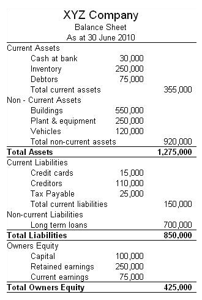
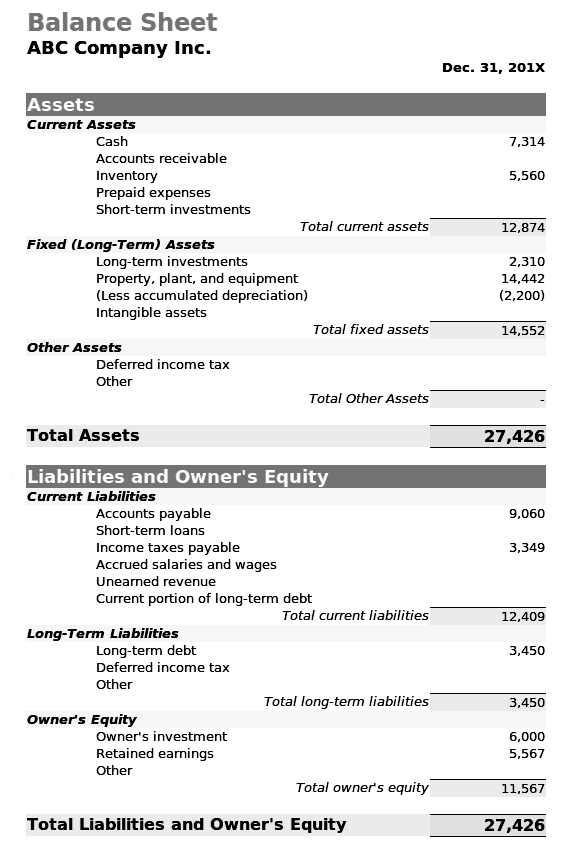
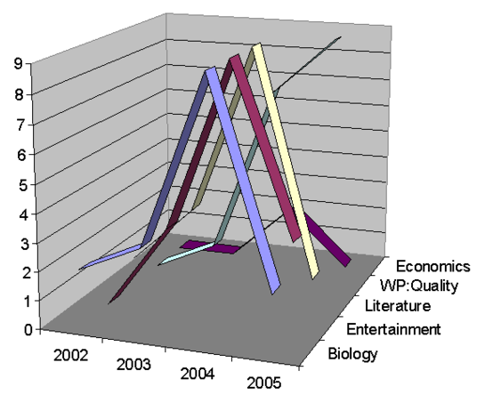
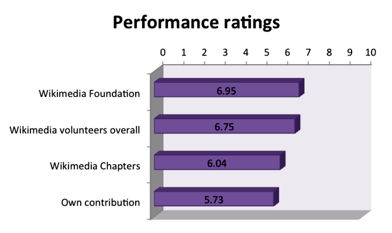
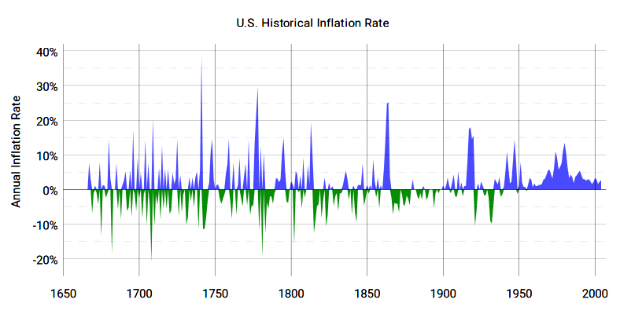
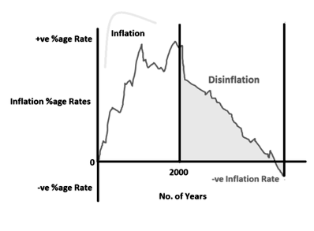
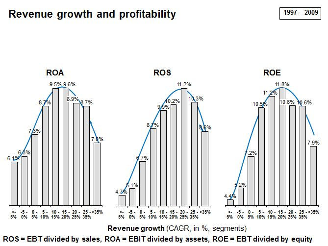
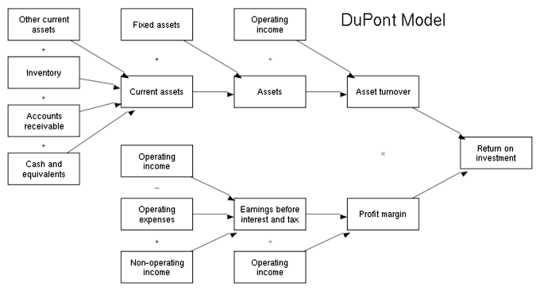
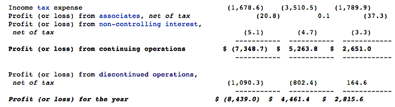

Table of Contents
16. Analyzing Financial Statements
16.1. Overview of Financial Statement Analysis
16.1.1. Using Financial Statements to Understand a Business
16.2. Standardizing Financial Statements
16.2.1. Income Statements
16.2.1. Balance Sheets
16.3. Ratio Analysis Overview
16.3.1. Classification
16.4. Using Financial Ratios for Analysis
16.4.1. Limitations of Financial Statement Analysis
16.4.1. Trend Analysis
16.4.1. Benchmarking
16.4.1. Industry Comparisons
16.4.1. Evaluating Financial Statements
16.4.1. Selected Financial Ratios and Analyses
16.5. Liquidity Ratios
16.5.1. Current Ratio
16.5.1. Quick Ratio (Acid-Test Ratio)
16.6. Debt-Management Ratios
16.6.1. Times-Interest-Earned Ratio
16.6.1. Total Debt to Total Assets
16.7. Profitability Ratios
16.7.1. Basic Earning Power (BEP) Ratio
16.7.1. Return on Common Equity
16.7.1. Return on Total Assets
16.7.1. Profit Margin
16.7.1. Operating Margin
16.8. Market-Value Ratios
16.8.1. Price/Earnings Ratio
16.8.1. Market/Book Ratio
16.9. Considering Inflation's Distortionary Effects
16.9.1. Deflation
16.9.1. Disinflation
16.9.1. Impact of Inflation on Financial Statement Analysis
16.10. The DuPont Equation, ROE, ROA, and Growth
16.10.1. Assessing Internal Growth and Sustainability
16.10.1. Dividend Payments and Earnings Retention
16.10.1. Relationships between ROA, ROE, and Growth
16.10.1. The DuPont Equation
16.10.1. ROE and Potential Limitations
16.11. Asset-Management Ratios
16.11.1. Fixed Assets Turnover Ratio
16.11.1. Total Assets Turnover Ratio
16.11.1. Days Sales Outstanding
16.11.1. Inventory Turnover Ratio
16.12. Other Distortions
16.12.1. Extraordinary Gains and Losses
16.12.1. Discrepancies
16.13. Next Steps in Financial Statement Analysis
16.13.1. Interpreting Ratios and Other Sources of Company Information
16. Analyzing Financial Statements
16.1. Overview of Financial Statement Analysis
16.1.1. Using Financial Statements to Understand a Business
Internal and external users rely on a company's financial statements to get an in-depth understanding of the company's financial position.
Learning Objective
Explain how a company would use the financial statements to perform risk analysis and profitability analysis
Key Points
- By using a variety of methods to analyze the financial information included on the statements users can determine the risk and profitability of a company.
- Financial statement analysis consists of reformulating reported financial statement information and analyzing and adjusting for measurement errors.
- Two types of ratio analysis are performed, analysis of risk and analysis of profitability.
- Analysis of risk typically aims at detecting the underlying credit risk of the firm.
- Analysis of profitability refers to the analysis of return on capital.
Key Terms
- profitability ratio
- measurements of the firm's use of its assets and control of its expenses to generate an acceptable rate of return
- reformulation
- A new formulation
- ratio
- A number representing a comparison between two things.
- profitability
- The capacity to make a profit.
The Role of Financial Statements
Internal and external users rely on a company's financial statements to get an in-depth understanding of the company's financial position. For internal users such as managers, the financial statements offer all the information necessary to plan, evaluate, and control operations. External users, such as investors and creditors, use the financial statements to gauge the future profitability and liquidity of a company.
{kind=link}
If an error is found on a previous year's financial statement, a correction must be made and the financials reissued.
Financial Statement Analysis
By using a variety of methods to analyze the financial information included on the statements, users can determine the risk and profitability of a company. Ideally, the analysis consists of reformulating the reported financial statement information, analyzing the information, and adjusting it for measurement errors. Then the various calculations are performed on the reformulated and adjusted financial statements. Unfortunately, the two first steps are often dropped in practice. In these instances financial ratios are calculated on the reported numbers without thorough examination and questioning, though some adjustments might be made.
An example of a reformulation used on the income statement occurs when dividing the reported items into recurring or normal items and non-recurring or special items. This division separates the earning into normal earnings, also known as core earnings, and transitory earnings. The idea is that normal earnings are more permanent and therefore more relevant for prediction and valuation.
Normal earnings are also separated into net operational profit after taxes (NOPAT) and net financial costs. In this example the balance sheet is grouped in net operating assets (NOA), net financial debt, and equity.
Types of Analysis
Two types of ratio analysis are analysis of risk and analysis of profitability:
Risk Analysis: Analysis of risk detects any underlying credit risks to the firm. Risk analysis consists of liquidity and solvency analysis. Liquidity analysis aims at analyzing whether the firm has enough liquidity to meet its obligations. One technique used to analyze illiquidity risk is to focus on ratios such as the current ratio and interest coverage. Cash flow analysis is also useful in evaluating risk. Solvency analysis aims at determining whether the firm is financed in such a way that it will be able to recover from a loss or a period of losses.
Profitability analysis: Analyses of profitability refer to the analysis of return on capital. For example, return on equity (ROE), is defined as earnings divided by average equity. Return on equity could be furthered refined as:
ROE = (RNOA )+ (RNOA - NFIR) * NFD/E
RNOA is return on net operating assets, NFIR is the net financial interest rate, NFD is net financial debt and E is equity. This formula clarifies the sources of return on equity.
16.2. Standardizing Financial Statements
16.2.1. Income Statements
Income statement is a company's financial statement that indicates how the revenue is transformed into the net income.
Learning Objective
Describe the different methods used for presenting data in a company's income statement
Key Points
- Income statement displays the revenues recognized for a specific period, and the cost and expenses charged against these revenues, including write offs (e.g., depreciation and amortization of various assets) and taxes.
- The income statement can be prepared in one of two methods: The Single Step income statement and Multi-Step income statement.
- The income statement includes revenue, expenses, COGS, SG&A, depreciation, other revenues and expenses, finance costs, income tax expense, and net income.
Key Term
- intangible asset
- Intangible assets are defined as identifiable non-monetary assets that cannot be seen, touched, or physically measured, and are created through time and effort, and are identifiable as a separate asset.
Income Statement
Income statement (also referred to as profit and loss statement [P&L]), revenue statement, a statement of financial performance, an earnings statement, an operating statement, or statement of operations) is a company's financial statement. This indicates how the revenue (money received from the sale of products and services before expenses are taken out, also known as the "top line") is transformed into the net income (the result after all revenues and expenses have been accounted for, also known as "Net Profit" or the "bottom line"). It displays the revenues recognized for a specific period, and the cost and expenses charged against these revenues, including write offs (e.g., depreciation and amortization of various assets) and taxes. The purpose of the income statement is to show managers and investors whether the company made or lost money during the period being reported.
The important thing to remember about an income statement is that it represents a period of time. This contrasts with the balance sheet, which represents a single moment in time.

GAAP and IRS accounting can differ.
Two Methods
- The Single Step income statement takes a simpler approach, totaling revenues and subtracting expenses to find the bottom line.
- The Multi-Step income statement (as the name implies) takes several steps to find the bottom line, starting with the gross profit. It then calculates operating expenses and, when deducted from the gross profit, yields income from operations. Adding to income from operations is the difference of other revenues and other expenses. When combined with income from operations, this yields income before taxes. The final step is to deduct taxes, which finally produces the net income for the period measured.
Operating Section
- Revenue - cash inflows or other enhancements of assets of an entity during a period from delivering or producing goods, rendering services, or other activities that constitute the entity's ongoing major operations. It is usually presented as sales minus sales discounts, returns, and allowances. Every time a business sells a product or performs a service, it obtains revenue. This often is referred to as gross revenue or sales revenue.
- Expenses - cash outflows or other using-up of assets or incurrence of liabilities during a period from delivering or producing goods, rendering services, or carrying out other activities that constitute the entity's ongoing major operations.
- Cost of Goods Sold (COGS)/Cost of Sales - represents the direct costs attributable to goods produced and sold by a business (manufacturing or merchandizing). It includes material costs, direct labor, and overhead costs (as in absorption costing), and excludes operating costs (period costs), such as selling, administrative, advertising or R&D, etc.
- Selling, General and Administrative expenses (SG&A or SGA) - consist of the combined payroll costs. SGA is usually understood as a major portion of non-production related costs, in contrast to production costs such as direct labour.
- Selling expenses - represent expenses needed to sell products (e.g., salaries of sales people, commissions, and travel expenses; advertising; freight; shipping; depreciation of sales store buildings and equipment, etc.).
- General and Administrative (G&A) expenses - represent expenses to manage the business (salaries of officers/executives, legal and professional fees, utilities, insurance, depreciation of office building and equipment, office rents, office supplies, etc.).
- Depreciation/Amortization - the charge with respect to fixed assets/intangible assets that have been capitalized on the balance sheet for a specific (accounting) period. It is a systematic and rational allocation of cost rather than the recognition of market value decrement.
- Research & Development (R&D) expenses - represent expenses included in research and development.
- Expenses recognized in the income statement should be analyzed either by nature (raw materials, transport costs, staffing costs, depreciation, employee benefit, etc.) or by function (cost of sales, selling, administrative, etc.).
Non-operating Section
- Other revenues or gains - revenues and gains from other than primary business activities (e.g., rent, income from patents).
- Other expenses or losses - expenses or losses not related to primary business operations, (e.g., foreign exchange loss).
- Finance costs - costs of borrowing from various creditors (e.g., interest expenses, bank charges).
- Income tax expense - sum of the amount of tax payable to tax authorities in the current reporting period (current tax liabilities/tax payable) and the amount of deferred tax liabilities (or assets).
- Irregular items - are reported separately because this way users can better predict future cash flows - irregular items most likely will not recur. These are reported net of taxes.
Bottom Line
Bottom line is the net income that is calculated after subtracting the expenses from revenue. Since this forms the last line of the income statement, it is informally called "bottom line. " It is important to investors as it represents the profit for the year attributable to the shareholders.
16.2.2. Balance Sheets
A standard balance sheet has three parts: assets, liabilities, and ownership equity; Asset = Liabilities + Equity.
Learning Objective
Identify the basics of a balance sheet
Key Points
- Of the four basic financial statements, the balance sheet is the only statement which applies to a single point in time of a business' calendar year.
- The main categories of assets are usually listed first (in order of liquidity) and are followed by the liabilities.
- The difference between the assets and the liabilities is known as "equity".
- Balance sheets can either be in the report form or the account form.
- A balance sheet is often presented alongside one for a different point in time (typically the previous year) for comparison.
- Guidelines for balance sheets of public business entities are given by the International Accounting Standards Board and numerous country-specific organizations/companies.
Key Terms
- asset
- Something or someone of any value; any portion of one's property or effects so considered.
- equity
- Ownership, especially in terms of net monetary value, of a business.
- balance sheet
- A summary of a person's or organization's assets, liabilities and equity as of a specific date.
Balance sheet
In financial accounting, a balance sheet or statement of financial position is a summary of the financial balances of a sole proprietorship, a business partnership, a corporation or other business organization, such as an LLC or an LLP. Assets, liabilities and ownership equity are listed as of a specific date, such as the end of its financial year. A balance sheet is often described as a "snapshot of a company's financial condition. " Of the four basic financial statements, the balance sheet is the only statement which applies to a single point in time of a business' calendar year.
A standard company balance sheet has three parts: assets, liabilities, and ownership equity. The main categories of assets are usually listed first, and typically in order of liquidity. Assets are followed by the liabilities. The difference between the assets and the liabilities is known as "equity. " Equity is the net assets or net worth of the capital of the company. According to the accounting equation, net worth must equal assets minus liabilities.
{kind=link}
Types
A balance sheet summarizes an organization or individual's assets, equity, and liabilities at a specific point in time. We have two forms of balance sheet. They are the report form and the account form. Individuals and small businesses tend to have simple balance sheets. Larger businesses tend to have more complex balance sheets, and these are presented in the organization's annual report. Large businesses also may prepare balance sheets for segments of their businesses. A balance sheet is often presented alongside one for a different point in time (typically the previous year) for comparison.
Personal Balance Sheet
A personal balance sheet lists current assets, such as cash in checking accounts and savings accounts; long-term assets, such as common stock and real estate; current liabilities, such as loan debt and mortgage debt due; or long-term liabilities, such as mortgage and other loan debt. Securities and real estate values are listed at market value rather than at historical cost or cost basis. Personal net worth is the difference between an individual's total assets and total liabilities.
U.S. Small Business Balance Sheet
A small business balance sheet lists current assets, such as cash, accounts receivable and inventory; fixed assets, such as land, buildings, and equipment; intangible assets, such as patents; and liabilities, such as accounts payable, accrued expenses, and long-term debt. Contingent liabilities, such as warranties, are noted in the footnotes to the balance sheet. The small business's equity is the difference between total assets and total liabilities.
Public Business Entities Balance Sheet Structure
Guidelines for balance sheets of public business entities are given by the International Accounting Standards Board and numerous country-specific organizations/companies.
Balance sheet account names and usage depend on the organization's country and the type of organization. Government organizations do not generally follow standards established for individuals or businesses.
If applicable to the business, summary values for the following items should be included in the balance sheet: Assets are all the things the business owns, including property, tools, cars, etc.
Assets:
1. Current assets
- Cash and cash equivalents
- Accounts receivable
- Inventories
- Prepaid expenses for future services that will be used within a year
2. Non-current assets (fixed assets)
- Property, plant, and equipment.
- Investment property, such as real estate held for investment purposes.
- Intangible assets.
- Financial assets (excluding investments accounted for using the equity method, accounts receivables, and cash and cash equivalents).
- Investments accounted for using the equity method
- Biological assets, which are living plants or animals. Bearer biological assets are plants or animals which bear agricultural produce for harvest, such as apple trees grown to produce apples and sheep raised to produce wool.
Liabilities:
- Accounts payable.
- Provisions for warranties or court decisions.
- Financial liabilities (excluding provisions and accounts payable), such as promissory notes and corporate bonds.
- Liabilities and assets for current tax.
- Deferred tax liabilities and deferred tax assets.
- Unearned revenue for services paid for by customers but not yet provided.
Equity:
- Issued capital and reserves attributable to equity holders of the parent company (controlling interest).
- Non-controlling interest in equity.
Regarding the items in equity section, the following disclosures are required:
- Numbers of shares authorized, issued and fully paid, and issued but not fully paid.
- Par value of shares.
- Reconciliation of shares outstanding at the beginning and the end of the period/
- Description of rights, preferences, and restrictions of shares.
- Treasury shares, including shares held by subsidiaries and associates.
- Shares reserved for issuance under options and contracts.
- A description of the nature and purpose of each reserve within owners' equity
16.3. Ratio Analysis Overview
16.3.1. Classification
Ratio analysis consists of calculating financial performance using five basic types of ratios: profitability, liquidity, activity, debt, and market.
Learning Objective
Classify a financial ratio based on what it measures in a company
Key Points
- Ratio analysis consists of the calculation of ratios from financial statements and is a foundation of financial analysis.
- A financial ratio, or accounting ratio, shows the relative magnitude of selected numerical values taken from those financial statements.
- The numbers contained in financial statements need to be put into context so that investors can better understand different aspects of the company's operations. Ratio analysis is one method an investor can use to gain that understanding.
Key Terms
- liquidity
- Availability of cash over short term: ability to service short-term debt.
- ratio
- A number representing a comparison between two things.
- ratio analysis
- the use of quantitative techniques on values taken from an enterprise's financial statements
- shareholder
- One who owns shares of stock.
Classification
Financial statements are generally insufficient to provide information to investors on their own; the numbers contained in those documents need to be put into context so that investors can better understand different aspects of the company's operations. Ratio analysis is one of three methods an investor can use to gain that understanding. Financial ratio analysis allows an observer to put the data provided by a company in context. This allows the observer to gauge the strength of different aspects of the company's operations.
Financial statement analysis is the process of understanding the risk and profitability of a firm through analysis of reported financial information. Ratio analysis is a foundation for evaluating and pricing credit risk and for doing fundamental company valuation. A financial ratio, or accounting ratio, is derived from a company's financial statements and is a calculation showing the relative magnitude of selected numerical values taken from those financial statements.
There are various types of financial ratios, grouped by their relevance to different aspects of a company's business as well as to their interest to different audiences. Financial ratios may be used internally by managers within a firm, by current and potential shareholders and creditors of a firm, and other audiences interested in understanding the strengths and weaknesses of a company, especially compared to the company over time or compared to other companies.
Types of Ratios
Most analysts think of financial ratios as consisting of five basic types:
- Profitability ratios measure the firm's use of its assets and control of its expenses to generate an acceptable rate of return.
- Liquidity ratios measure the availability of cash to pay debt.
- Activity ratios, also called efficiency ratios, measure the effectiveness of a firm's use of resources, or assets.
- Debt, or leverage, ratios measure the firm's ability to repay long-term debt.
- Market ratios are concerned with shareholder audiences. They measure the cost of issuing stock and the relationship between return and the value of an investment in company's shares.
16.4. Using Financial Ratios for Analysis
16.4.1. Limitations of Financial Statement Analysis
Financial statement analyses can yield a limited view of a company because of accounting, market, and management related limitations of such analyses.
Learning Objective
Describe the limitations associated with using ratio analysis
Key Points
- Ratio analysis is hampered by potential limitations with accounting and the data in the financial statements themselves. This can include errors as well as accounting mismanagement, which involves distorting the raw data used to derive financial ratios.
- Proponents of the stronger forms of the efficient-market hypothesis, technical analysts, and behavioral economists argue that fundamental analysis is limited as a stock valuation tool, all for their own distinct reasons.
- Ratio analysis can also omit important aspects of a firm's success, such as key intangibles, like brand, relationships, skills and culture. These are primary drivers of success over the longer term even though they are absent from conventional financial statements.
- Other disadvantages of this type of analysis is that if used alone it can present an overly simplistic view of the company by distilling a great deal of information into a single number or series of numbers that may not provide adequate context or be comparable across time or industry.
Key Term
- valuation
- The process of estimating the market value of a financial asset or liability.
Limitations of Financial Statement Analysis
Ratio analysis using financial statements includes accounting, stock market, and management related limitations. These limits leave analysts with remaining questions about the company.
First of all, ratio analysis is hampered by potential limitations with accounting and the data in the financial statements themselves. This can include errors as well as accounting mismanagement, which involves distorting the raw data used to derive financial ratios. While accounting measures may have more external standards and oversights than many other ways of benchmarking companies, this is still a limit.
Ratio analysis using financial statements as a tool for performing stock valuation can be limited as well. The efficient-market hypothesis (EMH), for example, asserts that financial markets are "informationally efficient. " In consequence of this, one cannot consistently achieve returns in excess of average market returns on a risk-adjusted basis, given the information available at the time the investment is made. While the weak form of this hypothesis argues that there can be a long run benefit to information derived from fundamental analysis, stronger forms argue that fundamental analysis like ratio analysis will not allow for greater financial returns.
In another view on stock markets, technical analysts argue that sentiment is as much if not more of a driver of stock prices than is the fundamental data on a company like its financials. Behavioral economists attribute the imperfections in financial markets to a combination of cognitive biases such as overconfidence, overreaction, representative bias, information bias, and various other predictable human errors in reasoning and information processing. These audiences also see limits to ratio analysis as a predictor of stock market returns.
At the management and investor level, ratio analysis using financial statements can also leave out a number of important aspects of a firm's success, such as key intangibles, like brand, relationships, skills, and culture. These are primary drivers of success over the longer term even though they are absent from conventional financial statements.
Other disadvantages of this type of analysis is that if used alone it can present an overly simplistic view of the company by distilling a great deal of information into a single number or series of numbers. Also, changes in the information underlying ratios can hamper comparisons across time and inconsistencies within and across the industry can also complicate comparisons.
16.4.2. Trend Analysis
Trend analysis consists of using ratios to compare company performance on an indicator over time, often to forecast or inform future events.
Learning Objective
Analyze the benefits and challenges of using trend analysis to evaluate a company
Key Points
- Trend analysis is the practice of collecting information and attempting to spot a pattern or trend in the same metric historically, either by examining it in tables or charts. Often this trend analysis is used to predict or inform decisions around future events.
- Trend analysis can be performed in different ways in finance. Fundamental analysis relies on historical financial statement analysis, often in the form of ratio analysis.
- Trend analysis using financial ratios can be complicated by changes to companies and accounting over time. For example, a company may change its business model and begin to operate in a new industry or it may change the end of its financial year or the way it accounts for inventories.
Key Terms
- sentiment
- A general thought, feeling, or sense.
- forecast
- An estimation of a future condition.
In addition to using financial ratio analysis to compare one company with others in its peer group, ratio analysis is often used to compare the company's performance on certain measures over time. Trend analysis is the practice of collecting information and attempting to spot a pattern, or trend, in the information. This often involves comparing the same metric historically, either by examining it in tables or charts. Often this trend analysis is used to forecast or inform decisions around future events, but it can be used to estimate uncertain events in the past .
{kind=link}
Determining the popularity and demand for specific subject over time through trend analysis.
Trend analysis can be performed in different ways in finance. For example, in technical analysis the direction of prices of a particular company's public stock is calculated through the study of past market data, primarily price, and volume. Fundamental analysis, on the other hand, relies not on sentiment measures (like technical analysis) but on financial statement analysis, often in the form of ratio analysis. Creditors and company managers also use ratio analysis as a form of trend analysis. For example, they may examine trends in liquidity or profitability over time.
Trend analysis using financial ratios can be complicated by the fact that companies and accounting can change over time. For example, a company may change its business model so that it begins to operate in a new industry or it may change the end of its financial year or the way it accounts for inventories. When examining historical trends in ratios, analysts will often make adjustments to the ratios for these reasons, perhaps performing some ratio analysis in which they segment out business segments that are not consistent over time or they separate recurring from non-recurring items.
16.4.3. Benchmarking
Comparing the financial ratios of a company to those of the top performer in its class is a type of benchmarking.
Learning Objective
Describe how benchmarking can be used to assess the strength of a company
Key Points
- Financial ratios allow for comparisons and, therefore, are intertwined with the process of benchmarking, comparing one's business to that of relevant others or of the same company at a different point in time processes on a specific indicator or series of indicators.
- Benchmarking can be done in many ways and ratio analysis is only one of these. One benefit of ratio analysis as a component of benchmarking is that many financial ratios are well-established calculations derived from verified data.
- Benchmarking using ratio analysis can be useful to various audiences; for example, investors and managers interested in incorporate quantitative comparisons of a company to peers.
Key Terms
- benchmark
- A standard by which something is evaluated or measured.
- ratio
- A number representing a comparison between two things.
Benchmarking
Financial ratios allow for comparisons and, therefore, are intertwined with the process of benchmarking, comparing one's business to that of others or of the same company at a different point in time. In many cases, benchmarking involves comparisons of one company to the best companies in a comparable peer group or the average in that peer group or industry. In the process of benchmarking, an analyst or manager identifies the best firms in their industry, or in another industry where similar processes exist, and compares the results and processes of those studied to one's own results and processes on a specific indicator or series of indicators.
{kind=link}
Results are the paramount concern to a transactional leader.
Benchmarking can be done in many ways, and ratio analysis is only one of these. One benefit of ratio analysis as a component of benchmarking is that many financial ratios are well-established calculations derived from verified data. In benchmarking as a whole, benchmarking can be done on a variety of processes, meaning that definitions may change over time within the same organization due to changes in leadership and priorities. The most useful comparisons can be made when metrics definitions are common and consistent between compared units and over time.
Benchmarking using ratio analysis can be useful to various audiences. From an investor perspective, benchmarking can involve comparing a company to peer companies that can be considered alternative investment opportunities from the perspective of an investor. In this process, the investor may compare the focus company to others in the peer group (leaders, averages) on certain financial ratios relevant to those companies and the investor's investment style. From a management perspective, benchmarking using ratio analysis may be a way for a manager to compare their company to peers using externally recognizable, quantitative data.
16.4.4. Industry Comparisons
While ratio analysis can be quite helpful in comparing companies within an industry, cross-industry comparisons should be done with caution.
Learning Objective
Describe how valuation methodologies are used to compare different companies in different sectors
Key Points
- One of the advantages of ratio analysis is that it allows comparison across companies. However, while ratios can be quite helpful in comparing companies within an industry and even across some similar industries, cross-industry comparisons may not be helpful and should be done with caution.
- An industry represents a classification of companies by economic activity, but "industry" can be too broad or narrow a definition for ratio analysis comparison. When comparing ratios, companies should be comparable in terms of having similar characteristics in the statistics being analyzed.
- Valuation using multiples only reveals patterns in relative values. For multiples to be useful, the statistic involved must bear a logical, meaningful relationship to the market value observed, which is something that can vary across industry.
Key Terms
- metric
- A measure for something; a means of deriving a quantitative measurement or approximation for otherwise qualitative phenomena.
- valuation
- The process of estimating the market value of a financial asset or liability.
One of the advantages of ratio analysis is that it allows comparison across companies, an activity which is often called benchmarking. However, while ratios can be quite helpful in comparing companies within an industry and even across some similar industries, comparing ratios of companies across different industries may not be helpful and should be done with caution. Comparing ratios of companies within an industry can allow an analyst to make like to like (apples to apples) comparisons. Comparisons across industries may be like to unlike (apples to oranges) comparisons, and thus less useful.
An industry represents a classification of companies by economic activity. At a very broad level, industry is sometimes classified into three sectors: primary or extractive, secondary or manufacturing, and tertiary or services. At a very detailed level are classification systems like the ISIC (International Standard Industrial Classification).
However, in terms of ratio analysis and comparing companies, it is most helpful to consider whether the companies being compared are comparable in the financial metrics being evaluated in the ratios. Different businesses will have different ratios for different reasons. A peer group is a set of companies or assets which are selected as being sufficiently comparable to the company or assets being valued (usually by virtue of being in the same industry or by having similar characteristics in terms of earnings growth and return on investment). From the investor perspective, peers can include companies that are not only direct product competitors but are subject to similar cycles, suppliers, and other external factors.
Valuation using multiples involves estimating the value of an asset by comparing it to the values assessed by the market for similar or comparable assets in the peer group. A valuation multiple is simply an expression of market value of an asset relative to a key statistic that is assumed to relate to that value. To be useful, that statistic – whether earnings, cash flow, or some other measure – must bear a logical relationship to the market value observed; to be seen, in fact, as the driver of that market value. The price to earnings ratio, for example, is a common multiple but can differ across companies that have different capital structures; this could make it difficult to compare this particular ratio across industries.
Additionally, there could be problems with the valuation of an entire industry, making ratio analysis of a company relative to an industry less useful. The use of multiples only reveals patterns in relative values, not absolute values such as those obtained from discounted cash flow valuations. If the peer group as a whole is incorrectly valued (such as may happen during a stock market "bubble"), then the resulting multiples will also be misvalued.
16.4.5. Evaluating Financial Statements
With a few exceptions, the majority of the data used in ratio analysis comes from evaluation of the financial statements.
Learning Objective
Differentiate between recurring and non-recurring items in financial reports
Key Points
- Ratio analysis is a tool for evaluating financial statements but also relies on the numbers in the reported financial statements being put into order to be used for comparison. With a few exceptions, the majority of the data used in ratio analysis comes from the financial statements.
- Prior to the calculation of financial ratios, reported financial statements are often reformulated and adjusted by analysts to make the financial ratios more meaningful as comparisons across time or across companies.
- In terms of reformulation, earnings might be separated into recurring and non-recurring items. In terms of adjustment of financial statements, analysts may adjust earnings numbers up or down when they suspect the reported data is inaccurate due to issues like earnings management.
Key Terms
- valuation
- The process of estimating the market value of a financial asset or liability.
- earnings management
- A euphemism, such as creative accounting, to refer to fraudulent accounting practices that manipulate reporting of income, assets or liabilities with the intent to influence interpretations of the income statements.
Ratio analysis is a tool for evaluating financial statements but also relies on the numbers in the reported financial statements being put into order to be used as ratios for comparison over time or across companies. Financial statements are used as a way to discover the financial position and financial results of a business. With a few exceptions, such as ratios involving stock price, the majority of the data used in ratio analysis comes from the financial statements. Ratios put this financial statement information in context. Evaluating financial statements involves getting the numbers in order and then using these figures to perform ratio analysis.
Prior to the calculation of financial ratios, reported financial statements are often reformulated and adjusted by analysts to make the financial ratios more meaningful as comparisons across time or across companies. In terms of reformulation, one common reformulation is to divide reported items into recurring or normal items and non-recurring or special items. In this way, earnings could be separated into normal or core earnings and transitory earnings with the idea that normal earnings are more permanent and hence more relevant for prediction and valuation. In terms of adjustment of financial statements, analysts may adjust earnings numbers up or down when they suspect the reported data is inaccurate due to issues like earnings management.
The evaluation of a company's financial statement analysis is a form of fundamental analysis that is bottoms up. While analysis of a company's prospects can include a number of factors, including understanding the economic situation or the industry or sentiment about the company or its products, ratio analysis of a company relies on the specific company financials.
16.4.6. Selected Financial Ratios and Analyses
Financial ratios and their analysis provide information on a firm's profitability and allow comparisons between the firm and its industry.
Learning Objective
Summarize how an interested party would use financial ratios to analyze a company's financial statement
Key Points
- When using comparative financial statements, the calculation of dollar or percentage changes in the statement items or totals from one period to the next or for the timeframe presented is referred to as horizontal analysis.
- Vertical analysis performed on an income statement is especially helpful in analyzing the relationships between revenue and expense items, such as the percentage of cost of goods sold to sales.
- Financial ratios, which compare one value in relation to another value over a 12 month period, are computed using information from a company's financial statements. Ratios can identify various financial attributes, such as solvency and liquidity, profitability, and return on equity.
- An example of a financial ratio is the current ratio, used to determine a company's liquidity, or its ability to meet its short term obligations. When comparing two companies, in theory, the entity with the higher current ratio is more liquid than the other.
- Often a financial ratio, which is a relative magnitude of two selected numerical values taken from a company's financial statements is used to find out a specific piece of information such as the quality of income.
Key Terms
- solvency
- The state of having enough funds or liquid assets to pay all of one's debts; the state of being solvent.
- comparative
- Comparable; bearing comparison.
- trend
- an inclination in a particular direction
Analyzing the Financial Statements
Analyzing a company's financial statements allows interested parties (investors, creditors and company management) to get an overall picture of the financial condition and profitability of a company. There are several ways to analyze a company's financial statements.
Horizontal vs. Vertical Analysis
Two main methods for analysis are horizontal and vertical analysis. When using comparative financial statements, the calculation of dollar or percentage changes in the statement items or totals over time is horizontal analysis. This analysis detects changes in a company's performance and highlights trends.
Vertical analysis is usually performed on a single financial statement (i.e., income statement): each item is expressed as a percentage of a significant total. Vertical analysis performed on an income statement is especially helpful in analyzing the relationships between revenue and expense items, such as the percentage of cost of goods sold to sales.

If an error is found on a previous year's financial statement, a correction must be made and the financials reissued.
Using Ratios
Financial ratios, which compare one value in relation to another value over a 12 month period, are computed using information from a company's financial statements. Ratios can identify various financial attributes of a company, such as solvency and liquidity, profitability (quality of income), and return on equity. A company's financial ratios can also be compared to those of their competitors to determine how the company is performing in relation to the rest of the industry.
Financial ratios may be used by managers within a firm, by current and potential shareholders (owners), and by a firm's creditors. For example, financial analysts compute financial ratios of public companies to evaluate their strengths and weaknesses and to identify which companies are profitable investments and which are not. Changes in financial ratios can impact a public company's stock price, depending on the effect the change has on the business. A publicly traded company's stock price can also be a variable used in the computation of certain ratios, such as the price/earnings ratio.
Examples of Ratios
The following are some examples of financial ratios that are used to analyze a company. For example, the quality of income ratio is computed by dividing cash flow from operating activities (CFOA) by net income:
Quality of income = CFOA / Net income
This ratio indicates the proportion of income that has been realized in cash. As with quality of sales, high levels for this ratio are desirable. The quality of income ratio has a tendency to exceed 100% because depreciation expense decreases net income and cash outflows to replace operating assets (part of cash flow from investing activities) is not subtracted when calculating the numerator.
Capital Acquisition Ratio = (cash flow from operations - dividends) / cash paid for acquisitions.
The capital acquisition ratio reflects the company's ability to finance capital expenditures from internal sources. A ratio of less than 1:1 (100 %) indicates that capital acquisitions are draining more cash from the business than they are generating revenues.
Current Ratio = Current Assets/Current Liabilities
The current ratio is used to determine a company's liquidity, or its ability to meet its short term obligations. When comparing two companies, in theory, the entity with the higher current ratio is more liquid than the other. However, it is important to note that determination of a company's solvency is based on various factors and not just the value of the current ratio.
16.5. Liquidity Ratios
16.5.1. Current Ratio
Current ratio is a financial ratio that measures whether or not a firm has enough resources to pay its debts over the next 12 months.
Learning Objective
Use a company's current ratio to evaluate its short-term financial strength
Key Points
- The liquidity ratio expresses a company's ability to repay short-term creditors out of its total cash. The liquidity ratio is the result of dividing the total cash by short-term borrowings.
- The current ratio is a financial ratio that measures whether or not a firm has enough resources to pay its debts over the next 12 months.
- Current ratio = current assets / current liabilities.
- Acceptable current ratios vary from industry to industry and are generally between 1.5 and 3 for healthy businesses.
Key Terms
- working capital management
- Decisions relating to working capital and short term financing are referred to as working capital management [19]. These involve managing the relationship between a firm's short-term assets and its short-term liabilities.
- current ratio
- current assets divided by current liabilities
Liquidity Ratio
Liquidity ratio expresses a company's ability to repay short-term creditors out of its total cash. The liquidity ratio is the result of dividing the total cash by short-term borrowings. It shows the number of times short-term liabilities are covered by cash. If the value is greater than 1.00, it means it is fully covered. High liquidity means a company has the ability to meet its short-term obligations.
Liquidity ratio may refer to:
- Reserve requirement - a bank regulation that sets the minimum reserves each bank must hold.
- Acid Test - a ratio used to determine the liquidity of a business entity.
The formula is the following:
LR = liquid assets / short-term liabilities
Current Ratio
The current ratio is a financial ratio that measures whether or not a firm has enough resources to pay its debts over the next 12 months. It compares a firm's current assets to its current liabilities. It is expressed as follows:
Current ratio = current assets / current liabilities
- Current asset is an asset on the balance sheet that can either be converted to cash or used to pay current liabilities within 12 months. Typical current assets include cash, cash equivalents, short-term investments, accounts receivable, inventory, and the portion of prepaid liabilities that will be paid within a year.
- Current liabilities are often understood as all liabilities of the business that are to be settled in cash within the fiscal year or the operating cycle of a given firm, whichever period is longer.
The current ratio is an indication of a firm's market liquidity and ability to meet creditor's demands. Acceptable current ratios vary from industry to industry and are generally between 1.5 and 3 for healthy businesses. If a company's current ratio is in this range, then it generally indicates good short-term financial strength. If current liabilities exceed current assets (the current ratio is below 1), then the company may have problems meeting its short-term obligations. If the current ratio is too high, then the company may not be efficiently using its current assets or its short-term financing facilities. This may also indicate problems in working capital management. In such a situation, firms should consider investing excess capital into middle and long term objectives.
Low values for the current or quick ratios (values less than 1) indicate that a firm may have difficulty meeting current obligations. However, low values do not indicate a critical problem. If an organization has good long-term prospects, it may be able to borrow against those prospects to meet current obligations. Some types of businesses usually operate with a current ratio less than one. For example, if inventory turns over much more rapidly than the accounts payable do, then the current ratio will be less than one. This can allow a firm to operate with a low current ratio.
If all other things were equal, a creditor, who is expecting to be paid in the next 12 months, would consider a high current ratio to be better than a low current ratio. A high current ratio means that the company is more likely to meet its liabilities which fall due in the next 12 months.
16.5.2. Quick Ratio (Acid-Test Ratio)
The Acid Test or Quick Ratio measures the ability of a company to use its assets to retire its current liabilities immediately.
Learning Objective
Calculate a company's quick ratio
Key Points
- Quick Ratio = (Cash and cash equivalent + Marketable securities + Accounts receivable) / Current liabilities.
- Acid Test Ratio = (Current assets - Inventory) / Current liabilities.
- Ideally, the acid test ratio should be 1:1 or higher, however this varies widely by industry. In general, the higher the ratio, the greater the company's liquidity.
Key Term
- Treasury bills
- Treasury bills (or T-Bills) mature in one year or less. Like zero-coupon bonds, they do not pay interest prior to maturity; instead they are sold at a discount of the par value to create a positive yield to maturity.
Quick ratio
In finance, the Acid-test (also known as quick ratio or liquid ratio) measures the ability of a company to use its near cash or quick assets to extinguish or retire its current liabilities immediately. Quick assets include those current assets that presumably can be quickly converted to cash at close to their book values. A company with a Quick Ratio of less than 1 cannot pay back its current liabilities.
Quick Ratio = (Cash and cash equivalent + Marketable securities + Accounts receivable) / Current liabilities.
Cash and cash equivalents are the most liquid assets found within the asset portion of a company's balance sheet. Cash equivalents are assets that are readily convertible into cash, such as money market holdings, short-term government bonds or Treasury bills, marketable securities, and commercial paper. Cash equivalents are distinguished from other investments through their short-term existence. They mature within 3 months, whereas short-term investments are 12 months or less and long-term investments are any investments that mature in excess of 12 months. Another important condition that cash equivalents need to satisfy, is the investment should have insignificant risk of change in value. Thus, common stock cannot be considered a cash equivalent, but preferred stock acquired shortly before its redemption date can be.
Acid test ratio
Acid test often refers to Cash ratio instead of Quick ratio: Acid Test Ratio = (Current assets - Inventory) / Current liabilities.
Note that Inventory is excluded from the sum of assets in the Quick Ratio, but included in the Current Ratio. Ratios are tests of viability for business entities but do not give a complete picture of the business' health. A business with large Accounts Receivable that won't be paid for a long period (say 120 days), and essential business expenses and Accounts Payable that are due immediately, the Quick Ratio may look healthy when the business could actually run out of cash. In contrast, if the business has negotiated fast payment or cash from customers, and long terms from suppliers, it may have a very low Quick Ratio and yet be very healthy.
The acid test ratio should be 1:1 or higher, however this varies widely by industry. The higher the ratio, the greater the company's liquidity will be (better able to meet current obligations using liquid assets).
16.6. Debt-Management Ratios
16.6.1. Times-Interest-Earned Ratio
Times Interest Earned ratio (EBIT or EBITDA divided by total interest payable) measures a company's ability to honor its debt payments.
Learning Objective
Use a company's index coverage ratio to evaluate its ability to meet its debt obligations
Key Points
- Times interest earned (TIE) or Interest Coverage ratio is a measure of a company's ability to honor its debt payments. It may be calculated as either EBIT or EBITDA divided by the total interest payable.
- Interest Charges = Traditionally "charges" refers to interest expense found on the income statement.
- EBIT = Revenue – Operating expenses (OPEX) + Non-operating income.
- EBITDA = Earnings before interest, taxes, depreciation and amortization.
- Times Interest Earned or Interest Coverage is a great tool when measuring a company's ability to meet its debt obligations.
Key Term
- Non-operating income
- Non-operating income, in accounting and finance, is gains or losses from sources not related to the typical activities of the business or organization. Non-operating income can include gains or losses from investments, property or asset sales, currency exchange, and other atypical gains or losses.
Times interest earned (TIE), or interest coverage ratio, is a measure of a company's ability to honor its debt payments. It may be calculated as either EBIT or EBITDA, divided by the total interest payable.
Times-Interest-Earned = EBIT or EBITDA / Interest charges
Interest rates of working capital financing can be largely affected by discount rate, WACC and cost of capital.
Times-Interest-Earned = EBIT or EBITDA / Interest charges
- Interest Charges = Traditionally "charges" refers to interest expense found on the income statement.
- EBIT = Earnings Before Interest and Taxes, also called operating profit or operating income. EBIT is a measure of a firm's profit that excludes interest and income tax expenses. It is the difference between operating revenues and operating expenses. When a firm does not have non-operating income, then operating income is sometimes used as a synonym for EBIT and operating profit.
- EBIT = Revenue – Operating Expenses (OPEX) + Non-operating income.
- Operating income = Revenue – Operating expenses.
- EBITDA = Earnings Before Interest, Taxes, Depreciation and Amortization. The EBITDA of a company provides insight on the operational profitability of the business. It shows the profitability of a company regarding its present assets and operations with the products it produces and sells, taking into account possible provisions that need to be done.
If EBITDA is negative, then the business has serious issues. A positive EBITDA, however, does not automatically imply that the business generates cash. EBITDA ignores changes in Working Capital (usually needed when growing a business), capital expenditures (needed to replace assets that have broken down), taxes, and interest.
Times Interest Earned or Interest Coverage is a great tool when measuring a company's ability to meet its debt obligations. When the interest coverage ratio is smaller than 1, the company is not generating enough cash from its operations EBIT to meet its interest obligations. The Company would then have to either use cash on hand to make up the difference or borrow funds. Typically, it is a warning sign when interest coverage falls below 2.5x.
16.6.2. Total Debt to Total Assets
The debt ratio is expressed as Total debt / Total assets.
Learning Objective
Use a company's debt ratio to evaluate its financial strength
Key Points
- The debt ratio measures the firm's ability to repay long-term debt by indicating the percentage of a company's assets that are provided via debt.
- Debt ratio = Total debt / Total assets.
- The higher the ratio, the greater risk will be associated with the firm's operation.
Key Terms
- goodwill
- Goodwill is an accounting concept meaning the value of an asset owned that is intangible but has a quantifiable "prudent value" in a business for example a reputation the firm enjoyed with its clients.
- debt to total assets ratio
- after tax income divided by liabilities
Example
- For example, a company with 2 million in total assets and 500,000 in total liabilities would have a debt ratio of 25%.
Financial Ratios
Financial ratios quantify many aspects of a business and are an integral part of the financial statement analysis. Financial ratios are categorized according to the financial aspect of the business which the ratio measures.
Financial ratios allow for comparisons:
- Between companies
- Between industries
- Between different time periods for one company
- Between a single company and its industry average
Ratios generally are not useful unless they are benchmarked against something else, like past performance or another company. Thus, the ratios of firms in different industries, which face different risks, capital requirements, and competition, are usually hard to compare.
Debt ratios
Debt ratio is an index of a business operation.
Debt ratios measure the firm's ability to repay long-term debt. It is a financial ratio that indicates the percentage of a company's assets that are provided via debt. It is the ratio of total debt (the sum of current liabilities and long-term liabilities) and total assets (the sum of current assets, fixed assets, and other assets such as 'goodwill').
- Debt ratio = Total debt / Total assets
Or alternatively:
- Debt ratio = Total liability / Total assets
The higher the ratio, the greater risk will be associated with the firm's operation. In addition, high debt to assets ratio may indicate low borrowing capacity of a firm, which in turn will lower the firm's financial flexibility. Like all financial ratios, a company's debt ratio should be compared with their industry average or other competing firms.
Total liabilities divided by total assets. The debt/asset ratio shows the proportion of a company's assets which are financed through debt. If the ratio is less than 0.5, most of the company's assets are financed through equity. If the ratio is greater than 0.5, most of the company's assets are financed through debt. Companies with high debt/asset ratios are said to be "highly leveraged," not highly liquid as stated above. A company with a high debt ratio (highly leveraged) could be in danger if creditors start to demand repayment of debt.
16.7. Profitability Ratios
16.7.1. Basic Earning Power (BEP) Ratio
The Basic Earning Power ratio (BEP) is Earnings Before Interest and Taxes (EBIT) divided by Total Assets.
Learning Objective
Calculate a company's Basic Earning Power ratio
Key Points
- The higher the BEP ratio, the more effective a company is at generating income from its assets.
- Using EBIT instead of operating income means that the ratio considers all income earned by the company, not just income from operating activity. This gives a more complete picture of how the company makes money.
- BEP is useful for comparing firms with different tax situations and different degrees of financial leverage.
Key Terms
- EBIT
- Earnings before interest and taxes. A measure of a business's profitability.
- Return on Assets
- A measure of a company's profitability. Calculated by dividing the net income for an accounting period by the average of the total assets the business held during that same period.
BEP Ratio
Another profitability ratio is the Basic Earning Power ratio (BEP). The purpose of BEP is to determine how effectively a firm uses its assets to generate income.
The BEP ratio is simply EBIT divided by total assets . The higher the BEP ratio, the more effective a company is at generating income from its assets.
BEP is calculated as the ratio of Earnings Before Interest and Taxes to Total Assets.
This may seem remarkably similar to the return on assets ratio (ROA), which is operating income divided by total assets. EBIT, or earnings before interest and taxes, is a measure of how much money a company makes, but is not necessarily the same as operating income:
EBIT = Revenue – Operating expenses+ Non-operating income
Operating income = Revenue – Operating expenses
The distinction between EBIT and Operating Income is non-operating income. Since EBIT includes non-operating income (such as dividends paid on the stock a company holds of another), it is a more inclusive way to measure the actual income of a company. However, in most cases, EBIT is relatively close to Operating Income.
The advantage of using EBIT, and thus BEP, is that it allows for more accurate comparisons of companies. BEP disregards different tax situations and degrees of financial leverage while still providing an idea of how good a company is at using its assets to generate income.
BEP, like all profitability ratios, does not provide a complete picture of which company is better or more attractive to investors. Investors should favor a company with a higher BEP over a company with a lower BEP because that means it extracts more value from its assets, but they still need to consider how things like leverage and tax rates affect the company.
16.7.2. Return on Common Equity
Return on equity (ROE) measures how effective a company is at using its equity to generate income and is calculated by dividing net profit by total equity.
Learning Objective
Calculate the Return on Equity (ROE) for a business
Key Points
- ROE is net income divided by total shareholders' equity.
- ROE is also the product of return on assets (ROA) and financial leverage.
- ROE shows how well a company uses investment funds to generate earnings growth. There is no standard for a good or bad ROE, but a higher ROE is better.
Key Term
- equity
- Ownership, especially in terms of net monetary value, of a business.
Return on Equity
Return on equity (ROE) is a financial ratio that measures how good a company is at generating profit.
ROE is the ratio of net income to equity. From the fundamental equation of accounting, we know that equity equals net assets minus net liabilities. Equity is the amount of ownership interest in the company, and is commonly referred to as shareholders' equity, shareholders' funds, or shareholders' capital.
In essence, ROE measures how efficient the company is at generating profits from the funds invested in it. A company with a high ROE does a good job of turning the capital invested in it into profit, and a company with a low ROE does a bad job. However, like many of the other ratios, there is no standard way to define a good ROE or a bad ROE. Higher ratios are better, but what counts as "good" varies by company, industry, and economic environment.
ROE can also be broken down into other components for easier use. ROE is the product of the net margin (profit margin), asset turnover, and financial leverage. Also note that the product of net margin and asset turnover is return on assets, so ROE is ROA times financial leverage.
The return on equity is a ratio of net income to equity. It is a measure of how effective the equity is at generating income.
Breaking ROE into parts allows us to understand how and why it changes over time. For example, if the net margin increases, every sale brings in more money, resulting in a higher overall ROE. Similarly, if the asset turnover increases, the firm generates more sales for every unit of assets owned, again resulting in a higher overall ROE. Finally, increasing financial leverage means that the firm uses more debt financing relative to equity financing. Interest payments to creditors are tax deductible, but dividend payments to shareholders are not. Thus, a higher proportion of debt in the firm's capital structure leads to higher ROE. Financial leverage benefits diminish as the risk of defaulting on interest payments increases. So if the firm takes on too much debt, the cost of debt rises as creditors demand a higher risk premium, and ROE decreases. Increased debt will make a positive contribution to a firm's ROE only if the matching return on assets (ROA) of that debt exceeds the interest rate on the debt.
16.7.3. Return on Total Assets
The return on assets ratio (ROA) measures how effectively assets are being used for generating profit.
Learning Objective
Calculate a company's return on assets
Key Points
- ROA is net income divided by total assets.
- The ROA is the product of two common ratios: profit margin and asset turnover.
- A higher ROA is better, but there is no metric for a good or bad ROA. An ROA depends on the company, the industry and the economic environment.
- ROA is based on the book value of assets, which can be starkly different from the market value of assets.
Key Terms
- net income
- Gross profit minus operating expenses and taxes.
- asset
- Something or someone of any value; any portion of one's property or effects so considered.
Return on Assets
The return on assets ratio (ROA) is found by dividing net income by total assets. The higher the ratio, the better the company is at using their assets to generate income. ROA was developed by DuPont to show how effectively assets are being used. It is also a measure of how much the company relies on assets to generate profit.
The return on assets ratio is net income divided by total assets. That can then be broken down into the product of profit margins and asset turnover.
Components of ROA
ROA can be broken down into multiple parts. The ROA is the product of two other common ratios - profit margin and asset turnover. When profit margin and asset turnover are multiplied together, the denominator of profit margin and the numerator of asset turnover cancel each other out, returning us to the original ratio of net income to total assets.
Profit margin is net income divided by sales, measuring the percent of each dollar in sales that is profit for the company. Asset turnover is sales divided by total assets. This ratio measures how much each dollar in asset generates in sales. A higher ratio means that each dollar in assets produces more for the company.
Limits of ROA
ROA does have some drawbacks. First, it gives no indication of how the assets were financed. A company could have a high ROA, but still be in financial straits because all the assets were paid for through leveraging. Second, the total assets are based on the carrying value of the assets, not the market value. If there is a large discrepancy between the carrying and market value of the assets, the ratio could provide misleading numbers. Finally, there is no metric to find a good or bad ROA. Companies that operate in capital intensive industries will tend to have lower ROAs than those who do not. The ROA is entirely contextual to the company, the industry and the economic environment.
16.7.4. Profit Margin
Profit margin measures the amount of profit a company earns from its sales and is calculated by dividing profit (gross or net) by sales.
Learning Objective
Calculate a company's net and gross profit margin
Key Points
- Profit margin is the profit divided by revenue.
- There are two types of profit margin: gross profit margin and net profit margin.
- A higher profit margin is better for the company, but there may be strategic decisions made to lower the profit margin or to even have it be negative.
Key Terms
- gross profit
- The difference between net sales and the cost of goods sold.
- net profit
- The gross revenue minus all expenses.
Profit Margin
Profit margin is one of the most used profitability ratios. Profit margin refers to the amount of profit that a company earns through sales.
The profit margin ratio is broadly the ratio of profit to total sales times 100%. The higher the profit margin, the more profit a company earns on each sale.
Since there are two types of profit (gross and net), there are two types of profit margin calculations. Recall that gross profit is simply the revenue minus the cost of goods sold (COGS). Net profit is the gross profit minus all other expenses. The gross profit margin calculation uses gross profit and the net profit margin calculation uses net profit . The difference between the two is that the gross profit margin shows the relationship between revenue and COGS, while the net profit margin shows the percentage of the money spent by customers that is turned into profit.
The percentage of net profit (gross profit minus all other expenses) earned on a company's sales.
The percentage of gross profit earned on the company's sales.
Companies need to have a positive profit margin in order to earn income, although having a negative profit margin may be advantageous in some instances (e.g. intentionally selling a new product below cost in order to gain market share).
The profit margin is mostly used for internal comparison. It is difficult to accurately compare the net profit ratio for different entities. Individual businesses' operating and financing arrangements vary so much that different entities are bound to have different levels of expenditure. Comparing one business' arrangements with another has little meaning. A low profit margin indicates a low margin of safety. There is a higher risk that a decline in sales will erase profits and result in a net loss or a negative margin.
16.7.5. Operating Margin
The operating margin is a ratio that determines how much money a company is actually making in profit and equals operating income divided by revenue.
Learning Objective
Calculate a company's operating margin
Key Points
- The operating margin equals operating income divided by revenue.
- The operating margin shows how much profit a company makes for each dollar in revenue. Since revenues and expenses are considered 'operating' in most companies, this is a good way to measure a company's profitability.
- Although It is a good starting point for analyzing many companies, there are items like interest and taxes that are not included in operating income. Therefore, the operating margin is an imperfect measurement a company's profitability.
Key Term
- operating income
- Revenue - operating expenses. (Does not include other expenses such as taxes and depreciation).
Operating Margin
The financial job of a company is to earn a profit, which is different than earning revenue. If a company doesn't earn a profit, their revenues aren't helping the company grow. It is not only important to see how much a company has sold, it is important to see how much a company is making.
The operating margin (also called the operating profit margin or return on sales) is a ratio that shines a light on how much money a company is actually making in profit. It is found by dividing operating income by revenue, where operating income is revenue minus operating expenses .
The operating margin is found by dividing net operating income by total revenue.
The higher the ratio is, the more profitable the company is from its operations. For example, an operating margin of 0.5 means that for every dollar the company takes in revenue, it earns \$0.50 in profit. A company that is not making any money will have an operating margin of 0: it is selling its products or services, but isn't earning any profit from those sales.
However, the operating margin is not a perfect measurement. It does not include things like capital investment, which is necessary for the future profitability of the company. Furthermore, the operating margin is simply revenue. That means that it does not include things like interest and income tax expenses. Since non-operating incomes and expenses can significantly affect the financial well-being of a company, the operating margin is not the only measurement that investors scrutinize. The operating margin is a useful tool for determining how profitable the operations of a company are, but not necessarily how profitable the company is as a whole.
16.8. Market-Value Ratios
16.8.1. Price/Earnings Ratio
Price to earnings ratio (market price per share / annual earnings per share) is used as a guide to the relative values of companies.
Learning Objective
Calculate a company's Price to Earnings Ratio
Key Points
- P/E ratio = Market price per share / Annual earnings per share.
- The P/E ratio is a widely used valuation multiple used as a guide to the relative values of companies; for example, a higher P/E ratio means that investors are paying more for each unit of current net income, so the stock is more expensive than one with a lower P/E ratio.
- Different types of P/E include: trailing P/E or P/E ttm, trailing P/E from continued operations, and forward P/E or P/Ef.
Key Terms
- time value of money
- The value of money, figuring in a given amount of interest, earned over a given amount of time.
- inflation
- An increase in the general level of prices or in the cost of living.
Example
- As an example, if stock A is trading at 24 and the earnings per share for the most recent 12 month period is three, then stock A has a P/E ratio of 24/3, or eight.
Price/Earnings Ratio
In stock trading, the price-to-earnings ratio of a share (also called its P/E, or simply "multiple") is the market price of that share divided by the annual earnings per share (EPS).
The P/E ratio is a widely used valuation multiple used as a guide to the relative values of companies; a higher P/E ratio means that investors are paying more for each unit of current net income, so the stock is more "expensive" than one with a lower P/E ratio. The P/E ratio can be regarded as being expressed in years. The price is in currency per share, while earnings are in currency per share per year, so the P/E ratio shows the number of years of earnings that would be required to pay back the purchase price, ignoring inflation, earnings growth, and the time value of money.
{kind=link}
The horizontal axis shows the real price-earnings ratio of the S&P Composite Stock Price Index as computed in Irrational Exuberance (inflation adjusted price divided by the prior ten-year mean of inflation-adjusted earnings). The vertical axis shows the geometric average real annual return on investing in the S&P Composite Stock Price Index, reinvesting dividends, and selling twenty years later. Note that over the last century, as the P/E ratio has decreased, annualized returns have increased.
P/E ratio = Market price per share / Annual earnings per share
The price per share in the numerator is the market price of a single share of the stock. The earnings per share in the denominator may vary depending on the type of P/E. The types of P/E include the following:
- Trailing P/E or P/E ttm: Here, earning per share is the net income of the company for the most recent 12 month period, divided by the weighted average number of common shares in issue during the period. This is the most common meaning of P/E if no other qualifier is specified. Monthly earnings data for individual companies are not available, and usually fluctuate seasonally, so the previous four quarterly earnings reports are used, and earnings per share are updated quarterly. Note, each company chooses its own financial year so the timing of updates will vary from one to another.
- Trailing P/E from continued operations: Instead of net income, this uses operating earnings, which exclude earnings from discontinued operations, extraordinary items (e.g. one-off windfalls and write-downs), and accounting changes. Longer-term P/E data, such as Shiller's, use net earnings.
- Forward P/E, P/Ef, or estimated P/E: Instead of net income, this uses estimated net earnings over the next 12 months. Estimates are typically derived as the mean of those published by a select group of analysts (selection criteria are rarely cited). In times of rapid economic dislocation, such estimates become less relevant as the situation changes (e.g. new economic data is published, and/or the basis of forecasts becomes obsolete) more quickly than analysts adjust their forecasts.
By comparing price and earnings per share for a company, one can analyze the market's stock valuation of a company and its shares relative to the income the company is actually generating. Stocks with higher (or more certain) forecast earnings growth will usually have a higher P/E, and those expected to have lower (or riskier) earnings growth will usually have a lower P/E. Investors can use the P/E ratio to compare the value of stocks; for example, if one stock has a P/E twice that of another stock, all things being equal (especially the earnings growth rate), it is a less attractive investment. Companies are rarely equal, however, and comparisons between industries, companies, and time periods may be misleading. P/E ratio in general is useful for comparing valuation of peer companies in a similar sector or group.
The P/E ratio of a company is a significant focus for management in many companies and industries. Managers have strong incentives to increase stock prices, firstly as part of their fiduciary responsibilities to their companies and shareholders, but also because their performance based remuneration is usually paid in the form of company stock or options on their company's stock (a form of payment that is supposed to align the interests of management with the interests of other stock holders). The stock price can increase in one of two ways: either through improved earnings, or through an improved multiple that the market assigns to those earnings. In turn, the primary driver for multiples such as the P/E ratio is through higher and more sustained earnings growth rates.
Companies with high P/E ratios but volatile earnings may be tempted to find ways to smooth earnings and diversify risk; this is the theory behind building conglomerates. Conversely, companies with low P/E ratios may be tempted to acquire small high growth businesses in an effort to "rebrand" their portfolio of activities and burnish their image as growth stocks and thus obtain a higher P/E rating.
16.8.2. Market/Book Ratio
The price-to-book ratio is a financial ratio used to compare a company's current market price to its book value.
Learning Objective
Calculate the different types of price to book ratios for a company
Key Points
- The calculation can be performed in two ways: 1) the company's market capitalization can be divided by the company's total book value from its balance sheet, 2) using per-share values, is to divide the company's current share price by the book value per share.
- A higher P/B ratio implies that investors expect management to create more value from a given set of assets, all else equal.
- Technically, P/B can be calculated either including or excluding intangible assets and goodwill.
Key Term
- outstanding shares
- Shares outstanding are all the shares of a corporation that have been authorized, issued and purchased by investors and are held by them.
Price/Book Ratio
The price-to-book ratio, or P/B ratio, is a financial ratio used to compare a company's current market price to its book value. The calculation can be performed in two ways, but the result should be the same either way.
In the first way, the company's market capitalization can be divided by the company's total book value from its balance sheet.
- Market Capitalization / Total Book Value
The second way, using per-share values, is to divide the company's current share price by the book value per share (i.e. its book value divided by the number of outstanding shares).
- Share price / Book value per share
As with most ratios, it varies a fair amount by industry. Industries that require more infrastructure capital (for each dollar of profit) will usually trade at P/B ratios much lower than, for example, consulting firms. P/B ratios are commonly used to compare banks, because most assets and liabilities of banks are constantly valued at market values.
A higher P/B ratio implies that investors expect management to create more value from a given set of assets, all else equal (and/or that the market value of the firm's assets is significantly higher than their accounting value). P/B ratios do not, however, directly provide any information on the ability of the firm to generate profits or cash for shareholders.
This ratio also gives some idea of whether an investor is paying too much for what would be left if the company went bankrupt immediately. For companies in distress, the book value is usually calculated without the intangible assets that would have no resale value. In such cases, P/B should also be calculated on a "diluted" basis, because stock options may well vest on the sale of the company, change of control, or firing of management.
It is also known as the market-to-book ratio and the price-to-equity ratio (which should not be confused with the price-to-earnings ratio), and its inverse is called the book-to-market ratio.
Total Book Value vs Tangible Book Value
Technically, P/B can be calculated either including or excluding intangible assets and goodwill. When intangible assets and goodwill are excluded, the ratio is often specified to be "price to tangible book value" or "price to tangible book".
16.9. Considering Inflation's Distortionary Effects
16.9.1. Deflation
Deflation is a decrease in the general price level of goods and services and occurs when the inflation rate falls below 0%.
Learning Objective
Explain how deflation can effect a business
Key Points
- In the IS/LM model (Investment and Saving equilibrium/ Liquidity Preference and Money Supply equilibrium model), deflation is caused by a shift in the supply-and-demand curve for goods and services, particularly a fall in the aggregate level of demand.
- In more recent economic thinking, deflation is related to risk: where the risk-adjusted return on assets drops to negative, investors and buyers will hoard currency rather than invest it. This can produce a liquidity trap.
- In monetarist theory, deflation must be associated with either a reduction in the money supply, a reduction in the velocity of money or an increase in the number of transactions. But any of these may occur separately without deflation.
- In mainstream economics, deflation may be caused by a combination of the supply and demand for goods and the supply and demand for money; specifically the supply of money going down and the supply of goods going up.
- The effects of deflation are: decreasing nominal prices for goods and services, increasing buying power of cash money and all assets denominated in cash terms, possibly decreasing investment and lending if cash holdings are seen as preferable, and benefiting recipients of fixed incomes.
Key Terms
- liquidity trap
- A liquidity trap is a situation in which injections of cash into the private banking system by a central bank fail to lower interest rates and hence fail to stimulate economic growth. A liquidity trap is caused when people hoard cash because they expect an adverse event such as deflation, insufficient aggregate demand, or war.
- deflationary spiral
- A deflationary spiral is a situation where decreases in price lead to lower production, which in turn leads to lower wages and demand, which leads to further decreases in price. Since reductions in general price level are called deflation, a deflationary spiral is when reductions in price lead to a vicious circle, where a problem exacerbates its own cause.
In economics, deflation is a decrease in the general price level of goods and services. This occurs when the inflation rate falls below 0% (a negative inflation rate). Inflation reduces the real value of money over time; conversely, deflation increases the real value of money – the currency of a national or regional economy. In turn, this allows one to buy more goods with the same amount of money over time.
Economists generally believe that deflation is a problem in a modern economy because they believe it may lead to a deflationary spiral .
{kind=link}
Annual inflation (in blue) and deflation (in green) rates in the United States from 1666 to 2004
In the IS/LM model (Investment and Saving equilibrium/ Liquidity Preference and Money Supply equilibrium model), deflation is caused by a shift in the supply-and-demand curve for goods and services, particularly with a fall in the aggregate level of demand. That is, there is a fall in how much the whole economy is willing to buy, and the going price for goods. Because the price of goods is falling, consumers have an incentive to delay purchases and consumption until prices fall further, which in turn reduces overall economic activity. Since this idles the productive capacity, investment also falls, leading to further reductions in aggregate demand. This is the deflationary spiral.
An answer to falling aggregate demand is stimulus, either from the central bank, by expanding the money supply; or by the fiscal authority to increase demand, and to borrow at interest rates which are below those available to private entities.
In more recent economic thinking, deflation is related to risk: where the risk-adjusted return on assets drops to negative, investors and buyers will hoard currency rather than invest it, even in the most solid of securities. This can produce a liquidity trap. A central bank cannot normally charge negative interest for money, and even charging zero interest often produces less stimulative effect than slightly higher rates of interest. In a closed economy, this is because charging zero interest also means having zero return on government securities, or even negative return on short maturities. In an open economy it creates a carry trade, and devalues the currency. A devalued currency produces higher prices for imports without necessarily stimulating exports to a like degree.
In monetarist theory, deflation must be associated with either a reduction in the money supply, a reduction in the velocity of money or an increase in the number of transactions. But any of these may occur separately without deflation. It may be attributed to a dramatic contraction of the money supply, or to adherence to a gold standard or to other external monetary base requirements.
In mainstream economics, deflation may be caused by a combination of the supply and demand for goods and the supply and demand for money, specifically: the supply of money going down and the supply of goods going up. Historic episodes of deflation have often been associated with the supply of goods going up (due to increased productivity) without an increase in the supply of money, or (as with the Great Depression and possibly Japan in the early 1990s) the demand for goods going down combined with a decrease in the money supply. Studies of the Great Depression by Ben Bernanke have indicated that, in response to decreased demand, the Federal Reserve of the time decreased the money supply, hence contributing to deflation.
The effects of deflation are thus: decreasing nominal prices for goods and services, increasing buying power of cash money and all assets denominated in cash terms, possibly decreasing investment and lending if cash holdings are seen as preferable (aka hoarding), and benefiting recipients of fixed incomes.
16.9.2. Disinflation
Disinflation is a decrease in the inflation rate; a slowdown in the rate of increase of the general price level of goods, services.
Learning Objective
Describe what causes disinflation
Key Points
- Disinflation occurs when the increase in the "consumer price level" slows down from the previous period when the prices were rising. Disinflation is the reduction in the general price level in the economy but for a very short period of time.
- The causes of disinflation may be a decrease in the growth rate of the money supply. If the central bank of a country enacts tighter monetary policy, the supply of money reduces, and money becomes more upscale and the demand for money remains constant.
- Disinflation may result from a recession. The central bank adopts contractionary monetary policy, goods, and services are more expensive. Even though the demand for commodities fall, the supply still remains unaltered.Thus, the prices would fall over a period of time leading to disinflation.
Key Terms
- recession
- A period of reduced economic activity.
- business cycle
- A long-term fluctuation in economic activity between growth and recession.
Disinflation is a decrease in the rate of inflation–a slowdown in the rate of increase of the general price level of goods and services in a nation's gross domestic product over time. Disinflation occurs when the increase in the "consumer price level" slows down from the previous period when the prices were rising. Disinflation is the reduction in the general price level in the economy but for a very short period of time. Disinflation takes place only when an economy is suffering from recession.
{kind=link}
Disinflation is a decrease in the rate of inflation as illustrated in the yellow region of this graph.
If the inflation rate is not very high to start with, disinflation can lead to deflation–decreases in the general price level of goods and services. For example if the annual inflation rate for the month of January is 5% and it is 4% in the month of February, the prices disinflated by 1% but are still increasing at a 4% annual rate. Again, if the current rate is 1% and it is -2% for the following month, prices disinflated by 3% (i.e., 1%-[-2]%) and are decreasing at a 2% annual rate.
The causes of disinflation are either a decrease in the growth rate of the money supply, or a business cycle contraction (recession). If the central bank of a country enacts tighter monetary policy, (i.e., the government start selling its securities) this reduces the supply of money in an economy. This contraction of the monetary policy is known as a "quantitative tightening technique. " When the government sell its securities in the market, the supply of money reduces, and money becomes more upscale and the demand for money remains constant. During a recession, competition among businesses for customers becomes more intense, and so retailers are no longer able to pass on higher prices to their customers. The main reason is that when the central bank adopts contractionary monetary policy, its becomes expensive to annex money, which leads to the fall in the demand for goods and services in the economy. Even though the demand for commodities fall, the supply of commodities still remains unaltered. Thus the prices fall over a period of time leading to disinflation.
When the growth rate of unemployment is below the natural rate of growth, this leads to an increase in the rate of inflation; whereas, when the growth rate of unemployment is above the natural rate of growth it leads to a decrease in the rate of inflation also known as disinflation. This happens when people are jobless, and they have a very small portion of money to spend, which indirectly implies reduction in the supply of money in an economy.
16.9.3. Impact of Inflation on Financial Statement Analysis
General price level changes creates distortions in financial statements. Inflation accounting is used in countries with high inflation.
Learning Objective
Discuss how inflation can impact a company's financial statements
Key Points
- Many of the historical numbers appearing on financial statements are not economically relevant because prices have changed since they were incurred.
- Since the numbers on financial statements represent dollars expended at different points of time and, in turn, embody different amounts of purchasing power, they are simply not additive.
- Reported profits may exceed the earnings that could be distributed to shareholders without impairing the company's ongoing operations.
- Future earnings are not easily projected from historical earnings. Future capital needs are difficult to forecast and may lead to increased leverage, which increases the risk to the business.
- The asset values for inventory, equipment and plant do not reflect their economic value to the business.
Key Terms
- Financial Accounting Standards Board
- private, not-for-profit organization whose primary purpose is to develop generally accepted accounting principles (GAAP) within the United States in the public's interest
- hyperinflation
- In economics, this occurs when a country experiences very high, accelerating, and perceptibly "unstoppable" rates of inflation. In such a condition, the general price level within an economy rapidly increases as the currency quickly loses real value.
- historical cost basis
- Under this type of accounting, assets and liabilities are recorded at their values when first acquired. They are not then generally restated for changes in values. Costs recorded in the Income Statement are based on the historical cost of items sold or used, rather than their replacement costs.
Inflation's Impact on Financial Statements
In most countries, primary financial statements are prepared on the historical cost basis of accounting without regard either to changes in the general level of prices. Accountants in the United Kingdom and the United States have discussed the effect of inflation on financial statements since the early 1900s .
{kind=link}
German Hyperinflation Data
General price level changes in financial reporting creates distortions in financial statements such as:
- Many of the historical numbers appearing on financial statements are not economically relevant because prices have changed since they were incurred.
- Since the numbers on financial statements represent dollars expended at different points of time and, in turn, embody different amounts of purchasing power, they are simply not additive. Hence, adding cash of \$10,000 held on December 31, 2002, with \$10,000 representing the cost of land acquired in 1955 (when the price level was significantly lower) is a dubious operation because of the significantly different amount of purchasing power represented by the two identical numbers.
- Reported profits may exceed the earnings that could be distributed to shareholders without impairing the company's ongoing operations.
- The asset values for inventory, equipment and plant do not reflect their economic value to the business.
- Future earnings are not easily projected from historical earnings.
- The impact of price changes on monetary assets and liabilities is not clear.
- Future capital needs are difficult to forecast and may lead to increased leverage, which increases the risk to the business.
- When real economic performance is distorted, these distortions lead to social and political consequenses that damage businesses (examples: poor tax policies and public misconceptions regarding corporate behavior).
Inflation accounting, a range of accounting systems designed to correct problems arising from historical cost accounting in the presence of inflation, is a solution to these problems. This type of accounting is used in countries experiencing high inflation or hyperinflation. For example, in countries such as these the International Accounting Standards Board requires corporate financial statements to be adjusted for changes in purchasing power using a price index.
16.10. The DuPont Equation, ROE, ROA, and Growth
16.10.1. Assessing Internal Growth and Sustainability
Sustainable-- as opposed to internal-- growth gives a company a better idea of its growth rate while keeping in line with financial policy.
Learning Objective
Calculate a company's internal growth and sustainability ratios
Key Points
- The internal growth rate is a formula for calculating the maximum growth rate a firm can achieve without resorting to external financing.
- Sustainable growth is defined as the annual percentage of increase in sales that is consistent with a defined financial policy.
- Another measure of growth, the optimal growth rate, assesses sustainable growth from a total shareholder return creation and profitability perspective, independent of a given financial strategy.
Key Terms
- sustainable growth rate
- the optimal growth from a financial perspective assuming a given strategy with clear defined financial frame conditions/ limitations
- retention ratio
- retained earnings divided by net income
- retention
- The act of retaining; something retained
Example
- A company's net income is 750,000 and its total shareholder equity is 5,000,000. Its earnings retention rate is 80%. What is its sustainable growth rate? Sustainable Growth Rate = (750,000/5,000,000) x (1-0.80). Sustainable Growth Rate = 3%
Internal Growth and Sustainability
The true benefit of a high return on equity arises when retained earnings are reinvested into the company's operations. Such reinvestment should, in turn, lead to a high rate of growth for the company. The internal growth rate is a formula for calculating maximum growth rate that a firm can achieve without resorting to external financing. It's essentially the growth that a firm can supply by reinvesting its earnings. This can be described as (retained earnings)/(total assets), or conceptually as the total amount of internal capital available compared to the current size of the organization.
We find the internal growth rate by dividing net income by the amount of total assets (or finding return on assets) and subtracting the rate of earnings retention. However, growth is not necessarily favorable. Expansion may strain managers' capacity to monitor and handle the company's operations. Therefore, a more commonly used measure is the sustainable growth rate.
Sustainable growth is defined as the annual percentage of increase in sales that is consistent with a defined financial policy, such as target debt to equity ratio, target dividend payout ratio, target profit margin, or target ratio of total assets to net sales.
We find the sustainable growth rate by dividing net income by shareholder equity (or finding return on equity) and subtracting the rate of earnings retention. While the internal growth rate assumes no financing, the sustainable growth rate assumes you will make some use of outside financing that will be consistent with whatever financial policy being followed. In fact, in order to achieve a higher growth rate, the company would have to invest more equity capital, increase its financial leverage, or increase the target profit margin.
Optimal Growth Rate
Another measure of growth, the optimal growth rate, assesses sustainable growth from a total shareholder return creation and profitability perspective, independent of a given financial strategy. The concept of optimal growth rate was originally studied by Martin Handschuh, Hannes Lösch, and Björn Heyden. Their study was based on assessments on the performance of more than 3,500 stock-listed companies with an initial revenue of greater than 250 million Euro globally, across industries, over a period of 12 years from 1997 to 2009.
{kind=link}
ROA, ROS and ROE tend to rise with revenue growth to a certain extent.
Due to the span of time included in the study, the authors considered their findings to be, for the most part, independent of specific economic cycles. The study found that return on assets, return on sales and return on equity do in fact rise with increasing revenue growth of between 10% to 25%, and then fall with further increasing revenue growth rates. Furthermore, the authors attributed this profitability increase to the following facts:
- Companies with substantial profitability have the opportunity to invest more in additional growth, and
- Substantial growth may be a driver for additional profitability, whether by attracting high performing young professionals, providing motivation for current employees, attracting better business partners, or simply leading to more self-confidence.
However, according to the study, growth rates beyond the "profitability maximum" rate could bring about circumstances that reduce overall profitability because of the efforts necessary to handle additional growth (i.e., integrating new staff, controlling quality, etc).
16.10.2. Dividend Payments and Earnings Retention
The dividend payout and retention ratios offer insight into how much of a firm's profit is distributed to shareholders versus retained.
Learning Objective
Calculate a company's dividend payout and retention ratios
Key Points
- Many corporations retain a portion of their earnings and pay the remainder as a dividend.
- Dividends are usually paid in the form of cash, store credits, or shares in the company.
- Cash dividends are a form of investment income and are usually taxable to the recipient in the year that they are paid.
- Dividend payout ratio is the fraction of net income a firm pays to its stockholders in dividends.
- Retained earnings can be expressed in the retention ratio.
Key Term
- stock split
- To issue a higher number of new shares to replace old shares. This effectively increases the number of shares outstanding without changing the market capitalization of the company.
Dividend Payments and Earnings Retention
Dividends are payments made by a corporation to its shareholder members. It is the portion of corporate profits paid out to stockholders. On the other hand, retained earnings refers to the portion of net income which is retained by the corporation rather than distributed to its owners as dividends. Similarly, if the corporation takes a loss, then that loss is retained and called variously retained losses, accumulated losses or accumulated deficit. Retained earnings and losses are cumulative from year to year with losses offsetting earnings. Many corporations retain a portion of their earnings and pay the remainder as a dividend.
A dividend is allocated as a fixed amount per share. Therefore, a shareholder receives a dividend in proportion to their shareholding. Retained earnings are shown in the shareholder equity section in the company's balance sheet–the same as its issued share capital.
Public companies usually pay dividends on a fixed schedule, but may declare a dividend at any time, sometimes called a "special dividend" to distinguish it from the fixed schedule dividends. Dividends are usually paid in the form of cash, store credits (common among retail consumers' cooperatives), or shares in the company (either newly created shares or existing shares bought in the market). Further, many public companies offer dividend reinvestment plans, which automatically use the cash dividend to purchase additional shares for the shareholder.
Cash dividends (most common) are those paid out in currency, usually via electronic funds transfer or a printed paper check. Such dividends are a form of investment income and are usually taxable to the recipient in the year they are paid. This is the most common method of sharing corporate profits with the shareholders of the company. For each share owned, a declared amount of money is distributed. Thus, if a person owns 100 shares and the cash dividend is \$0.50 per share, the holder of the stock will be paid \$50. Dividends paid are not classified as an expense but rather a deduction of retained earnings. Dividends paid do not show up on an income statement but do appear on the balance sheet.

Retained earnings can be found on the balance sheet, under the owners' (or shareholders') equity section.
Stock dividends are those paid out in the form of additional stock shares of the issuing corporation or another corporation (such as its subsidiary corporation). They are usually issued in proportion to shares owned (for example, for every 100 shares of stock owned, a 5% stock dividend will yield five extra shares). If the payment involves the issue of new shares, it is similar to a stock split in that it increases the total number of shares while lowering the price of each share without changing the market capitalization, or total value, of the shares held.
Dividend Payout and Retention Ratios
Dividend payout ratio is the fraction of net income a firm pays to its stockholders in dividends:
The part of the earnings not paid to investors is left for investment to provide for future earnings growth. These retained earnings can be expressed in the retention ratio. Retention ratio can be found by subtracting the dividend payout ratio from one, or by dividing retained earnings by net income.
The dividend payout ratio is equal to dividend payments divided by net income for the same period.
16.10.3. Relationships between ROA, ROE, and Growth
Return on assets is a component of return on equity, both of which can be used to calculate a company's rate of growth.
Learning Objective
Discuss the different uses of the Return on Assets and Return on Assets ratios
Key Points
- Return on equity measures the rate of return on the shareholders' equity of common stockholders.
- Return on assets shows how profitable a company's assets are in generating revenue.
- In other words, return on assets makes up two-thirds of the DuPont equation measuring return on equity.
- Capital intensity is the term for the amount of fixed or real capital present in relation to other factors of production. Rising capital intensity pushes up the productivity of labor.
Key Terms
- return on common stockholders' equity
- a fiscal year's net income (after preferred stock dividends but before common stock dividends) divided by total equity (excluding preferred shares), expressed as a percentage
- quantitatively
- With respect to quantity rather than quality.
Example
- A company has net income of 500,000. It has total assets valued at 3,000,000. Its retention rate is 80%, and its shareholder equity is equal to \$1,500,000. What is the company's ROA and internal growth rate? What is the company's ROE and sustainable growth rate? ROA = 500,000/3,000,000 = 17% Internal growth rate = 17% x 80% = 13% ROE = 17% x (3,000,000/1,500,000) = 34% Sustainable growth rate = 34% x 80% = 27.2%
Return On Assets Versus Return On Equity
In review, return on equity measures the rate of return on the ownership interest (shareholders' equity) of common stockholders. Therefore, it shows how well a company uses investment funds to generate earnings growth. Return on assets shows how profitable a company's assets are in generating revenue. Return on assets is equal to net income divided by total assets.
Return on assets is equal to net income divided by total assets.
This percentage shows what the company can do with what it has (i.e., how many dollars of earnings they derive from each dollar of assets they control). This is in contrast to return on equity, which measures a firm's efficiency at generating profits from every unit of shareholders' equity. Return on assets is, however, a vital component of return on equity, being an indicator of how profitable a company is before leverage is considered. In other words, return on assets makes up two-thirds of the DuPont equation measuring return on equity.
ROA, ROE, and Growth
In terms of growth rates, we use the value known as return on assets to determine a company's internal growth rate. This is the maximum growth rate a firm can achieve without resorting to external financing. We use the value for return on equity, however, in determining a company's sustainable growth rate, which is the maximum growth rate a firm can achieve without issuing new equity or changing its debt-to-equity ratio.
Capital Intensity and Growth
Return on assets gives us an indication of the capital intensity of the company. "Capital intensity" is the term for the amount of fixed or real capital present in relation to other factors of production, especially labor. The underlying concept here is how much output can be procured from a given input (assets!). The formula for capital intensity is below:
The use of tools and machinery makes labor more effective, so rising capital intensity pushes up the productivity of labor. While companies that require large initial investments will generally have lower return on assets, it is possible that increased productivity will provide a higher growth rate for the company. Capital intensity can be stated quantitatively as the ratio of the total money value of capital equipment to the total potential output. However, when we adjust capital intensity for real market situations, such as the discounting of future cash flows, we find that it is not independent of the distribution of income. In other words, changes in the retention or dividend payout ratios can lead to changes in measured capital intensity.
16.10.4. The DuPont Equation
The DuPont equation is an expression which breaks return on equity down into three parts: profit margin, asset turnover, and leverage.
Learning Objective
Explain why splitting the return on equity calculation into its component parts may be helpful to an analyst
Key Points
- By splitting ROE into three parts, companies can more easily understand changes in their returns on equity over time.
- As profit margin increases, every sale will bring more money to a company's bottom line, resulting in a higher overall return on equity.
- As asset turnover increases, a company will generate more sales per asset owned, resulting in a higher overall return on equity.
- Increased financial leverage will also lead to an increase in return on equity, since using more debt financing brings on higher interest payments, which are tax deductible.
Key Term
- competitive advantage
- something that places a company or a person above the competition
Example
- A company has sales of 1,000,000. It has a net income of 400,000. Total assets have a value of 5,000,000, and shareholder equity has a value of 10,000,000. Using DuPont analysis, what is the company's return on equity? Profit Margin = 400,000/1,000,000 = 40%. Asset Turnover = 1,000,000/5,000,000 = 20%. Financial Leverage = 5,000,000/10,000,000 = 50%. Multiplying these three results, we find that the Return on Equity = 4%.
The DuPont Equation
{kind=link}
A flow chart representation of the DuPont Model.
The DuPont equation is an expression which breaks return on equity down into three parts. The name comes from the DuPont Corporation, which created and implemented this formula into their business operations in the 1920s. This formula is known by many other names, including DuPont analysis, DuPont identity, the DuPont model, the DuPont method, or the strategic profit model.
In the DuPont equation, ROE is equal to profit margin multiplied by asset turnover multiplied by financial leverage.
Under DuPont analysis, return on equity is equal to the profit margin multiplied by asset turnover multiplied by financial leverage. By splitting ROE (return on equity) into three parts, companies can more easily understand changes in their ROE over time.
Components of the DuPont Equation: Profit Margin
Profit margin is a measure of profitability. It is an indicator of a company's pricing strategies and how well the company controls costs. Profit margin is calculated by finding the net profit as a percentage of the total revenue. As one feature of the DuPont equation, if the profit margin of a company increases, every sale will bring more money to a company's bottom line, resulting in a higher overall return on equity.
Components of the DuPont Equation: Asset Turnover
Asset turnover is a financial ratio that measures how efficiently a company uses its assets to generate sales revenue or sales income for the company. Companies with low profit margins tend to have high asset turnover, while those with high profit margins tend to have low asset turnover. Similar to profit margin, if asset turnover increases, a company will generate more sales per asset owned, once again resulting in a higher overall return on equity.
Components of the DuPont Equation: Financial Leverage
Financial leverage refers to the amount of debt that a company utilizes to finance its operations, as compared with the amount of equity that the company utilizes. As was the case with asset turnover and profit margin, Increased financial leverage will also lead to an increase in return on equity. This is because the increased use of debt as financing will cause a company to have higher interest payments, which are tax deductible. Because dividend payments are not tax deductible, maintaining a high proportion of debt in a company's capital structure leads to a higher return on equity.
The DuPont Equation in Relation to Industries
The DuPont equation is less useful for some industries, that do not use certain concepts or for which the concepts are less meaningful. On the other hand, some industries may rely on a single factor of the DuPont equation more than others. Thus, the equation allows analysts to determine which of the factors is dominant in relation to a company's return on equity. For example, certain types of high turnover industries, such as retail stores, may have very low profit margins on sales and relatively low financial leverage. In industries such as these, the measure of asset turnover is much more important.
High margin industries, on the other hand, such as fashion, may derive a substantial portion of their competitive advantage from selling at a higher margin. For high end fashion and other luxury brands, increasing sales without sacrificing margin may be critical. Finally, some industries, such as those in the financial sector, chiefly rely on high leverage to generate an acceptable return on equity. While a high level of leverage could be seen as too risky from some perspectives, DuPont analysis enables third parties to compare that leverage with other financial elements that can determine a company's return on equity.
16.10.5. ROE and Potential Limitations
Return on equity measures the rate of return on the ownership interest of a business and is irrelevant if earnings are not reinvested or distributed.
Learning Objective
Calculate a company's return on equity
Key Points
- Return on equity is an indication of how well a company uses investment funds to generate earnings growth.
- Returns on equity between 15% and 20% are generally considered to be acceptable.
- Return on equity is equal to net income (after preferred stock dividends but before common stock dividends) divided by total shareholder equity (excluding preferred shares).
- Stock prices are most strongly determined by earnings per share (EPS) as opposed to return on equity.
Key Term
- fundamental analysis
- An analysis of a business with the goal of financial projections in terms of income statement, financial statements and health, management and competitive advantages, and competitors and markets.
Example
- A small business' net income after taxes is \$10,000. The total shareholder equity in the business is \$50,000. What is the return on equity? ROE = 10,000/50,000 ROE = 20%
Return On Equity
Return on equity (ROE) measures the rate of return on the ownership interest or shareholders' equity of the common stock owners. It is a measure of a company's efficiency at generating profits using the shareholders' stake of equity in the business. In other words, return on equity is an indication of how well a company uses investment funds to generate earnings growth. It is also commonly used as a target for executive compensation, since ratios such as ROE tend to give management an incentive to perform better. Returns on equity between 15% and 20% are generally considered to be acceptable.
The Formula
Return on equity is equal to net income, after preferred stock dividends but before common stock dividends, divided by total shareholder equity and excluding preferred shares.
ROE is equal to after-tax net income divided by total shareholder equity.
Expressed as a percentage, return on equity is best used to compare companies in the same industry. The decomposition of return on equity into its various factors presents various ratios useful to companies in fundamental analysis.
This is an expression of return on equity decomposed into its various factors.
The practice of decomposing return on equity is sometimes referred to as the "DuPont System. "
Potential Limitations of ROE
Just because a high return on equity is calculated does not mean that a company will see immediate benefits. Stock prices are most strongly determined by earnings per share (EPS) as opposed to return on equity. Earnings per share is the amount of earnings per each outstanding share of a company's stock. EPS is equal to profit divided by the weighted average of common shares.
EPS is equal to profit divided by the weighted average of common shares.
The true benefit of a high return on equity comes from a company's earnings being reinvested into the business or distributed as a dividend. In fact, return on equity is presumably irrelevant if earnings are not reinvested or distributed.
16.11. Asset-Management Ratios
16.11.1. Fixed Assets Turnover Ratio
Fixed-asset turnover is the ratio of sales to value of fixed assets, indicating how well the business uses fixed assets to generate sales.
Learning Objective
Calculate the fixed-asset turnover ratio for a business
Key Points
- Fixed asset turnover = Net sales / Average net fixed assets.
- The higher the ratio, the better, because a high ratio indicates the business has less money tied up in fixed assets for each unit of currency of sales revenue. A declining ratio may indicate that the business is over-invested in plant, equipment, or other fixed assets.
- Fixed assets, also known as a non-current asset or as property, plant, and equipment (PP&E), is a term used in accounting for assets and property that cannot easily be converted into cash.
Key Term
- IAS
- International Financial Reporting Standards (IFRS) are designed as a common global language for business affairs so that company accounts are understandable and comparable across international boundaries.
Fixed Assets
Fixed assets, also known as a non-current asset or as property, plant, and equipment (PP&E), is a term used in accounting for assets and property that cannot easily be converted into cash. This can be compared with current assets, such as cash or bank accounts, which are described as liquid assets. In most cases, only tangible assets are referred to as fixed.
Moreover, a fixed/non-current asset also can be defined as an asset not directly sold to a firm's consumers/end-users. As an example, a baking firm's current assets would be its inventory (in this case, flour, yeast, etc.), the value of sales owed to the firm via credit (i.e., debtors or accounts receivable), cash held in the bank, etc. Its non-current assets would be the oven used to bake bread, motor vehicles used to transport deliveries, cash registers used to handle cash payments, etc. Each aforementioned non-current asset is not sold directly to consumers.
These are items of value that the organization has bought and will use for an extended period of time; fixed assets normally include items, such as land and buildings, motor vehicles, furniture, office equipment, computers, fixtures and fittings, and plant and machinery. These often receive favorable tax treatment (depreciation allowance) over short-term assets. According to International Accounting Standard (IAS) 16, Fixed Assets are assets which have future economic benefit that is probable to flow into the entity and which have a cost that can be measured reliably.
The primary objective of a business entity is to make a profit and increase the wealth of its owners. In the attainment of this objective, it is required that the management will exercise due care and diligence in applying the basic accounting concept of "Matching Concept." Matching concept is simply matching the expenses of a period against the revenues of the same period.
The use of assets in the generation of revenue is usually more than a year–that is long term. It is, therefore, obligatory that in order to accurately determine the net income or profit for a period depreciation, it is charged on the total value of asset that contributed to the revenue for the period in consideration and charge against the same revenue of the same period. This is essential in the prudent reporting of the net revenue for the entity in the period.
Fixed-asset Turnover
Fixed-asset turnover is the ratio of sales (on the profit and loss account) to the value of fixed assets (on the balance sheet). It indicates how well the business is using its fixed assets to generate sales.
Fixed asset turnover = Net sales / Average net fixed assets
Generally speaking, the higher the ratio, the better, because a high ratio indicates the business has less money tied up in fixed assets for each unit of currency of sales revenue. A declining ratio may indicate that the business is over-invested in plant, equipment, or other fixed assets.
16.11.2. Total Assets Turnover Ratio
Total asset turnover is a financial ratio that measures the efficiency of a company's use of its assets in generating sales revenue.
Learning Objective
Calculate the total assets turnover ratio for a business
Key Points
- Total assets turnover = Net sales revenue / Average total assets.
- Net sales are operating revenues earned by a company for selling its products or rendering its services.
- Anything tangible or intangible that is capable of being owned or controlled to produce value and that is held to have positive economic value is considered an asset.
- Companies with low profit margins tend to have high asset turnover, while those with high profit margins have low asset turnover.
Key Term
- profit margins
- Profit margin, net margin, net profit margin or net profit ratio all refer to a measure of profitability. It is calculated by finding the net profit as a percentage of the revenue.
Example
- Examples of intangible assets are goodwill, copyrights, trademarks, patents, computer programs, and financial assets, including such items as accounts receivable, bonds and stocks.
Total assets turnover
This is a financial ratio that measures the efficiency of a company's use of its assets in generating sales revenue or sales income to the company. Asset turnover measures the efficiency of a company's use of its assets in generating sales revenue or sales income to the company.
Companies with low profit margins tend to have high asset turnover, while those with high profit margins have low asset turnover. Companies in the retail industry tend to have a very high turnover ratio due mainly to cut-throat and competitive pricing.
Total assets turnover = Net sales revenue / Average total assets
- "Sales" is the value of "Net Sales" or "Sales" from the company's income statement".
- Average Total Assets" is the average of the values of "Total assets" from the company's balance sheet in the beginning and the end of the fiscal period. It is calculated by adding up the assets at the beginning of the period and the assets at the end of the period, then dividing that number by two.
Net sales
- In bookkeeping, accounting, and finance, Net sales are operating revenues earned by a company for selling its products or rendering its services. Also referred to as revenue, they are reported directly on the income statement as Sales or Net sales.
- In financial ratios that use income statement sales values, "sales" refers to net sales, not gross sales. Sales are the unique transactions that occur in professional selling or during marketing initiatives.
Total assets
In financial accounting, assets are economic resources. Anything tangible or intangible that is capable of being owned or controlled to produce value, and that is held to have positive economic value, is considered an asset. Simply stated, assets represent value of ownership that can be converted into cash (although cash itself is also considered an asset).
The balance sheet of a firm records the monetary value of the assets owned by the firm. It is money and other valuables belonging to an individual or business.
Two major asset classes are tangible assets and intangible assets.
- Tangible assets contain various subclasses, including current assets and fixed assets. Current assets include inventory, while fixed assets include such items as buildings and equipment.
- Intangible assets are non-physical resources and rights that have a value to the firm because they give the firm some kind of advantage in the market place.
16.11.3. Days Sales Outstanding
Days sales outstanding (also called DSO or days receivables) is a calculation used by a company to estimate their average collection period.
Learning Objective
Calculate the days sales outstanding ratio for a business
Key Points
- Days sales outstanding is a financial ratio that illustrates how well a company's accounts receivables are being managed.
- DSO ratio = accounts receivable / average sales per day, or DSO ratio = accounts receivable / (annual sales / 365 days).
- Generally speaking, higher DSO ratio can indicate a customer base with credit problems and/or a company that is deficient in its collections activity. A low ratio may indicate the firm's credit policy is too rigorous, which may be hampering sales.
Key Terms
- days in inventory
- the average value of inventory divided by the average cost of goods sold per day
- average collection period
- 365 divided by the receivables turnover ratio
- outstanding check
- a check that has been written but has not yet been deposited in the receiver's bank account
- business cycle
- The term business cycle (or economic cycle) refers to economy-wide fluctuations in production or economic activity over several months or years.
Days Sales Outstanding
In accountancy, days sales outstanding (also called DSO or days receivables) is a calculation used by a company to estimate their average collection period. It is a financial ratio that illustrates how well a company's accounts receivables are being managed. The days sales outstanding figure is an index of the relationship between outstanding receivables and credit account sales achieved over a given period.
Typically, days sales outstanding is calculated monthly. The days sales outstanding analysis provides general information about the number of days on average that customers take to pay invoices. Generally speaking, though, higher DSO ratio can indicate a customer base with credit problems and/or a company that is deficient in its collections activity. A low ratio may indicate the firm's credit policy is too rigorous, which may be hampering sales.
Days sales outstanding is considered an important tool in measuring liquidity. Days sales outstanding tends to increase as a company becomes less risk averse. Higher days sales outstanding can also be an indication of inadequate analysis of applicants for open account credit terms. An increase in DSO can result in cash flow problems, and may result in a decision to increase the creditor company's bad debt reserve.
A DSO ratio can be expressed as:
- DSO ratio = accounts receivable / average sales per day, or
- DSO ratio = accounts receivable / (annual sales / 365 days)
For purposes of this ratio, a year is considered to have 365 days.
Days sales outstanding can vary from month to month and over the course of a year with a company's seasonal business cycle. Of interest, when analyzing the performance of a company, is the trend in DSO. If DSO is getting longer, customers are taking longer to pay their bills, which may be a warning that customers are dissatisfied with the company's product or service, or that sales are being made to customers that are less credit worthy or that sales people have to offer longer payment terms in order to generate sales. Many financial reports will state Receivables Turnover defined as Net Credit Account Sales / Trade Receivables; divide this value into the time period in days to get DSO.
However, days sales outstanding is not the most accurate indication of the efficiency of accounts receivable department. Changes in sales volume influence the outcome of the days sales outstanding calculation. For example, even if the overdue balance stays the same, an increase of sales can result in a lower DSO. A better way to measure the performance of credit and collection function is by looking at the total overdue balance in proportion of the total accounts receivable balance (total AR = Current + Overdue), which is sometimes calculated using the days' delinquent sales outstanding (DDSO) formula.
16.11.4. Inventory Turnover Ratio
Inventory turnover is a measure of the number of times inventory is sold or used in a time period, such as a year.
Learning Objective
Calculate inventory turnover and average days to sell inventory for a business
Key Points
- Inventory turnover = Cost of goods sold/Average inventory.
- Average days to sell the inventory = 365 days /Inventory turnover ratio.
- A low turnover rate may point to overstocking, obsolescence, or deficiencies in the product line or marketing effort.
- Conversely, a high turnover rate may indicate inadequate inventory levels, which may lead to a loss in business as the inventory is too low.
Key Term
- holding cost
- In business management, holding cost is money spent to keep and maintain a stock of goods in storage.
Inventory Turnover
In accounting, the Inventory turnover is a measure of the number of times inventory is sold or used in a time period, such as a year. The equation for inventory turnover equals the cost of goods sold divided by the average inventory. Inventory turnover is also known as inventory turns, stockturn, stock turns, turns, and stock turnover.
Inventory Turnover Equation
- The formula for inventory turnover:
Inventory turnover = Cost of goods sold/Average inventory
- The formula for average inventory:
Average inventory = (Beginning inventory + Ending inventory)/2
- The average days to sell the inventory is calculated as follows:
Average days to sell the inventory = 365 days / Inventory turnover ratio
Application in Business
A low turnover rate may point to overstocking, obsolescence, or deficiencies in the product line or marketing effort. However, in some instances a low rate may be appropriate, such as where higher inventory levels occur in anticipation of rapidly rising prices or expected market shortages. A low turnover rate may point to overstocking, obsolescence, or deficiencies in the product line or marketing effort.
Conversely, a high turnover rate may indicate inadequate inventory levels, which may lead to a loss in business as the inventory is too low. This often can result in stock shortages.
Some compilers of industry data (e.g., Dun & Bradstreet) use sales as the numerator instead of cost of sales. Cost of sales yields a more realistic turnover ratio, but it is often necessary to use sales for purposes of comparative analysis. Cost of sales is considered to be more realistic because of the difference in which sales and the cost of sales are recorded. Sales are generally recorded at market value (i.e., the value at which the marketplace paid for the good or service provided by the firm). In the event that the firm had an exceptional year and the market paid a premium for the firm's goods and services, then the numerator may be an inaccurate measure. However, cost of sales is recorded by the firm at what the firm actually paid for the materials available for sale. Additionally, firms may reduce prices to generate sales in an effort to cycle inventory. In this article, the terms "cost of sales" and "cost of goods sold" are synonymous.
An item whose inventory is sold (turns over) once a year has a higher holding cost than one that turns over twice, or three times, or more in that time. Stock turnover also indicates the briskness of the business. The purpose of increasing inventory turns is to reduce inventory for three reasons.
- Increasing inventory turns reduces holding cost. The organization spends less money on rent, utilities, insurance, theft, and other costs of maintaining a stock of good to be sold.
- Reducing holding cost increases net income and profitability as long as the revenue from selling the item remains constant.
- Items that turn over more quickly increase responsiveness to changes in customer requirements while allowing the replacement of obsolete items. This is a major concern in fashion industries.
When making comparison between firms, it's important to take note of the industry, or the comparison will be distorted. Making comparison between a supermarket and a car dealer, will not be appropriate, as a supermarket sells fast moving goods, such as sweets, chocolates, soft drinks, so the stock turnover will be higher. However, a car dealer will have a low turnover due to the item being a slow moving item. As such, only intra-industry comparison will be appropriate.
16.12. Other Distortions
16.12.1. Extraordinary Gains and Losses
Extra gains or losses are nonrecurring, onetime, unusual, non-operating gains or losses that are recorded by a business during the period.
Learning Objective
Define what makes a gain or loss extraordinary
Key Points
- Extra gains or losses are nonrecurring, onetime, unusual, non-operating gains or losses that are recorded by a business during the period.
- No items may be presented in the income statement as extraordinary items under IFRS regulations, but are permissible under US GAAP. (IAS 1.87) The amount of each of these gains or losses, net of the income tax effect, is reported separately in the income statement.
- Examples of extraordinary items are casualty losses, losses from expropriation of assets by a foreign government, gain on life insurance, gain or loss on the early extinguishment of debt, gain on troubled debt restructuring, and write-off of an intangible asset.
Key Terms
- extraordinary items
- unusual (abnormal) and infrequent things that impact the company
- non-operating
- Non-operating in accounting and finance is not related to the typical activities of the business or organization.
Extraordinary Gains and Losses
Extraordinary items are both unusual (abnormal) and infrequent, for example, unexpected natural disaster, expropriation, prohibitions under new regulations. It is notable that a natural disaster might not qualify depending on location (e.g., frost damage would not qualify in Canada but would in the tropics).
Extra gains or losses are the result of unforeseen and atypical events. They are nonrecurring, onetime, unusual, non-operating gains, or losses that are recorded by a business during the period.
No items may be presented in the income statement as extraordinary items under IFRS regulations, but are permissible under US GAAP. (IAS 1.87) The amount of each of these gains or losses, net of the income tax effect, is reported separately in the income statement. Net income is reported before and after these gains and losses. As a result, extraordinary gains or losses don't skew the company's regular earnings. These gains and losses should not be recorded very often but, in fact, many businesses record them every other year or so, causing much consternation to investors. In addition to evaluating the regular stream of sales and expenses that produce operating profit, investors also have to factor into their profit performance analysis the perturbations of these irregular gains and losses reported by a business.
{kind=link}
This income statement is a very brief example prepared in accordance with IFRS; no extraordinary items are presented.
Examples of extraordinary items are casualty losses, losses from expropriation of assets by a foreign government, gain on life insurance, gain or loss on the early extinguishment of debt, gain on troubled debt restructuring, and write-off of an intangible asset. Write down and write off of receivables and inventory are not extraordinary, because they relate to normal business operational activities.They would be considered extraordinary, however, if they resulted from an Act of God (e.g., casualty loss arising from an earthquake) or governmental expropriation.
16.12.2. Discrepancies
Accounting discrepancies are unintentional mistakes in the delivery of financial statements.
Learning Objective
Recognize the various reasons a discrepancy may occur, and how to prevent them
Key Points
- Mistakes happen. Being aware of common pitfalls is the best way to avoid accounting discrepancies, though.
- Discrepancies shouldn't be confused with irregularities, which are generally assumed to be intentional mistakes to misrepresent data.
- Data errors, software issues, late payments, and shrinkage may all contribute to potential discrepancies in the tracking of organizational finances.
- Preventing discrepancies is best, but if a mistake occurs, it is best to address it as soon as possible (as opposed to waiting for an audit to catch it).
Key Terms
- accounting irregularity
- An intentional misrepresentation of accounting data.
- discrepancies
- Accidental misrepresentations of accounting data.
Nobody's perfect, including accountants. From time to time, discrepancies will arise on financial statements, for a wide variety of reasons. Accounting errors that are not intentional are described as discrepancies (as opposed to an accounting irregularity, which is distinguished from a discrepancy by an intention to defraud). Accounting requires meticulous eye for detail and a strong sense of accuracy and accountability, and financial professionals and internal stakeholders must be careful of errors which could be mistaken for intentional fraud.
Common Discrepancies
Data Errors
All accounting relies heavily on input data from various sources, including accurate inventory counts, revenue reports, sales figures, asset valuations, and a wide variety of other relevant aspects of income statements, balance sheets, and statements of cash flows. Any error from input data points will thus be reflected in the final financial statements, for public companies these are released externally. Catching these errors through careful confirmation of all receipts and cash flows is a central responsibility of both management and the accounting and finance teams.
Late Payments
If a large client is late in providing capital for a service or product provided, this can impact the accuracy of a financial release. Accounts receivable, by their nature, are timed payments with specific deadlines. If an accountant assumes a receivable will be timely, they may potentially create a discrepancy. As a result, all reporting should be done on what actually is, rather than what's expected to be.
Shrinkage
Particularly relevant for retail outlets is the concept of shrinkage. Shrinkage is the lost inventory/sales that occurs over an operational period. This can be due to petty theft, mismanaged inventory, perishable goods going unrecorded, and a wide variety of other factors. Ensuring that inventory is carefully managed and shrinkage is built into any current financial calculations is important to maintain accuracy and avoid discrepancy.
Bank Reconciliation
While rarely an issue in the long term, bank transfer and capital movements sometimes take time. Taking into account bank reconciliation when viewing the amount shown in a current account and the amount that should be shown is an occasionally cause of temporary discrepancy.
Technology
Modern accounting is largely a software endeavor. Utilizing complex software incurs the potential for complex, hard to catch errors. Having a strong IT team, and accountants familiar with the world of software coding are important assets in modern financial reporting.
Addressing Discrepancies
While perhaps common sense, amending a discrepancy as soon as it is identified is important. Waiting to be audited is not a good tactic, as this will likely result in fees or penalties for inaccurate reporting. Double and triple checking financial statements inputs before building them into public releases is particularly important for this field of work.
16.13. Next Steps in Financial Statement Analysis
16.13.1. Interpreting Ratios and Other Sources of Company Information
Financial statement analysis uses comparisons and relationships of data to enhance the utility or practical value of accounting information.
Learning Objective
Explain how a company would use one of the four financial statement analysis methods to interpret their data
Key Points
- In financial statement analysis, comparisons and relationships can be shown in the following ways: vertical analysis, horizontal analysis, trend percentages, and ratios.
- The vertical method is used on a single financial statement, such as an income statement, and involves each item being expressed as a percentage of a significant total.
- The horizontal method is comparative, and shows the same company's financial statements for one or two successive periods in side-by-side columns. The side-by-side display reveals changes in a company's performance and highlights trends.
- Trend percentages make comparisons to a selected base year or period. Trend percentages are useful for comparing financial statements over several years, because they disclose changes and trends occurring through time.
- Ratios are expressions of logical relationships between items in the financial statements from a single period. A ratio can show a relationship between two items on the same financial statement or between two items on different financial statements (e.g.balance sheet and income statement).
Key Terms
- trend
- an inclination in a particular direction
- ratio
- A number representing a comparison between two things.
- analysis
- a process of dismantling or separating an object of inquiry into its constituent elements in order to study the nature, function, or meaning of the object
Financial Statement Analysis
Financial statement analysis, also known as financial analysis, is the process of understanding the risk and profitability of a company through the analysis of that company's reported financial information. This information includes annual and quarterly reports, such as income statements, balance sheets, and statements of cash flows.
All financial analysis relies on comparing or relating data in a way that enhances the utility or practical value of the information. For example, when analyzing a particular company, it is helpful to know that they had a net income of \$100,000 for the year, but it is even more helpful to know that, in a previous year, they only had \$25,000 in net income. As more information is added, such as the total amount of sales, the number of assets, and the cost of goods sold, the initial information becomes increasingly valuable, and a more complete picture of a company's financial activity can be derived.
In financial statement analysis, comparisons and relationships can be shown in the following ways:
- Absolute increases and decreases for an item from one period to the next
- Percentage increases and decreases for an item from one period to the next
- Percentages of single items to an aggregate total
- Trend percentages
- Ratios
Methods for Financial Statement Analysis
There are four methods for making these types of comparisons: vertical analysis, horizontal analysis, ratios, and trend percentages.
The vertical method is used on a single financial statement, such as an income statement. In a vertical analysis, each item is expressed as a percentage of a significant total. This type of analysis is especially helpful in analyzing income statement data .
The horizontal method is a comparative, and presents the same company's financial statements for one or two successive periods in side-by-side columns. This comparative display shows dollar changes or percentage changes in the statement items or totals across given periods of time. Horizontal analysis detects changes in a company's performance and highlights various other trends.
The trend percentages method is the same as horizontal analysis, except that in the former, comparisons are made to a selected base year or period. Trend percentages are useful for comparing financial statements over several years, because they reveal changes and trends occurring over time.
Ratios are expressions of logical relationships between items in financial statements from a single period. It is possible to calculate a number of ratios from the same set of financial statements. A ratio can show a relationship between two items on the same financial statement or between two items on different financial statements (e.g.balance sheet and income statement). The only limiting factor in choosing ratios is that the items used to construct a ratio must have a logical relationship to one another.

In vertical analysis each item is expressed as a percentage of a significant total.